| 「現役年齢」をのばす技術 (PHP新書) | |
| 和田秀樹 | |
| PHP研究所 (2007) | |
「現役年齢」をのばす技術
和田秀樹
目次
サザエさんの波平をめざすか、島耕作をめざすか？
みなさんは、サザエさんに出てくる磯野波平と島耕作はどちらが若いと思うだろうか。島耕作のほうが若いと思っている人が多いのではないだろうか。波平は、すっかりおじいちゃんキャラであるのに対して、島耕作は出世を続け、常務として第一線で働きながら、華やかな女性関係を繰り広げている。島耕作のほうが若々しく見えても不思議ではない。
しかし、コミックの設定では、波平は五二～五三歳、島耕作のほうは、五九歳ということで、実は、島耕作のほうが波平よりも年齢はずっと上である。
どうしてこのような逆のイメージが生まれているのかというと、それは時代背景と密接にかかわっている。サザエさんが描かれたころは、五二、五三歳といえば、「おじいちゃん」というイメージが強かった。子が巣だち孫もいて、数年後には定年を迎えて引退する人。それが世間一般で考えられていた五二、五三歳のイメージであり、そのイメージがコミックに反映されていた。このような五〇代像は、当時の中高年モデルとして多くの人に受け入れられていた。
一方、島耕作は戦後生まれの団塊世代である。団塊世代の人たちが五〇代になったころには、「五〇代はおじいちゃん」というイメージは、まったくなくなっていた。五〇代といえば、第一線で活躍する時期であり、体力もあり、出世の望みもかなりある。また、五〇代で若い女性と不倫をしている人も珍しくはない。このように「おじいちゃん」とはすっかりかけ離れた、ビジネスマンとしても、男としても「現役世代」なのである。
二〇〇六年に就任した安倍晋三首相は、五二歳であるが「おじいちゃん」というイメージなどまったくない。「これからの人」というイメージのほうが強く、むしろその若さを心配されるくらいである。つまり、五〇代というのは、現在では「若い人」と考えてもよいくらいなのである。
コミックの島耕作が人気を保っているのも、現在の日本社会においては、島耕作のように、若々しいサラリーマン人生を送っている五〇代の人が少なくないことの表れではないだろうか。あるいは、島耕作のような人生にあこがれる三〇代、四〇代のサラリーマンが多いことの表れだろう。
四〇年前なら、五〇代、六〇代のモデルは「波平」だったかもしれない。しかし、今の五〇代、六〇代のモデルは「島耕作」といってもいい。五〇代、六〇代の人は、孫がいようと、老け込むような歳ではなく、まだまだ現役バリバリで活躍し続けることができる年代である。五〇代、六〇代から、さらなる出世をめざしてもいいし、ベンチャー企業を興してもいいし、彼女をつくってもいい。
そのような「現役年齢」をのばすためにはどうしたらよいかを、本書で提案していければと思っている。
現役年齢をのばすのに大切なことは二つ
いつまでも現役でいたいと思っている人は多いはずだが、現役でいるために重要なことは二つある。
一つは、「自分はもう若くない」という発想をやめることだ。昔の人と比べると、今の人は二〇歳から三〇歳くらいは若々しい。五〇代、六〇代で老け込むのは早すぎるし、まして四〇代後半で「定年まで大過なく過ごしていければ十分だ」などと考えて、人生を諦め気分で過ごすなど、あまりにももったいない。五〇代、六〇代になれば体力は衰えるから、体はムリがきかなくなっているけれども、心の面で三〇代、四〇代の若々しい気持ちを保ち続けることは難しいことではない。少なくとも、サザエさんの時代の三〇代、四〇代くらいのライフスタイルはできると思う。
五〇代、六〇代の人は、悠々自適の生活を送るよりも、第一線で活躍しているほうが時代に合っている。「もう歳だから後進に道を譲ろう」などと考える必要はなく、「さあ、これからが、仕事で活躍する時期だ」と思うくらいのほうがいい。若い人へ理解を示すよりも、「オレがいなきゃダメだ」と頑張り続けるほうが、現役生活を長く続けられる。意地を張って心を若く保ち続けるほうが、体にもよい影響をもたらす。ともかく「自分はもう若くない」という発想をやめることである。
もう一つは、矛盾するようだが、「衰え」と上手につき合っていくことだ。加齢とともに衰えていくことは自然現象なので、逆らうことはできない。少しぐらい老化を遅らせることはできるかもしれないが、老化そのものを止めることはできない。だとしたら、老化現象とつき合っていくしかない。
「現役として、第一線で活躍する」といっても、毎日長時間残業をする必要はない。体力的に残業はつらくなってくるから、残業は減らし、場合によっては、定期的に休暇をとるくらいでいい。若い人から見たら、「仕事をしないおじさん」に見えるかもしれないが、長時間労働をする人が仕事のできる人というわけではないので、気にすることはない。体力に合わせて十分に休息をとり、疲れをとってスッキリした脳を使って、より生産的な仕事をすればいい。
体調がすぐれないのに、「オレが会社に行かなきゃこの会社は動かない」などと考えて、ムリに会社に行くのは、健康上よくないし、それでは部下も育たなくなってしまう。気持ちの面では「オレがいなきゃダメだ」といつまでも思い続けていていいのだが、労働形態に関しては、体力も考慮して働かないといけない。体を酷使するのではなく、頭脳で若い人以上の生産性を発揮すればいいのだし、あるいは、生産性の高い若い人たちをうまく使って、総合的に自分の職場全体の生産性を高めればいいのである。言い換えるなら、知恵と人望で会社に貢献すればいいのであり、労働時間の長さはまったく関係がない。
私がおすすめしたいのは、定年を迎えるその日まで、連日残業をこなしながら、定年の日でピタリとすべてをゼロにするというハードランディング・タイプの引退ではなく、定年までに体力に合わせて少しずつ労働形態をゆるやかにしていくというスタイルだ。ゆるやかに定年の日を迎えるというソフトランディング・タイプの引退をおすすめしたい。
ハードランディングをしてしまうと、定年以降に何もやることがなくてボーっとしてしまったり、うつになったりすることもある。それまでの体の無理がたたって病気になる場合もある。それよりも、知恵を働かせながら、体への負担は減らしていくというかたちのほうが、定年後の生活にスムーズに移行できるのではないかと思う。
現役年齢をのばすためには、手を抜ける部分は手を抜きながら、力を入れるときには力を出して、いつまでもイキイキと活動し続けることである。
病気にならなければいいのか？
中高年になってくると、体の健康のことが気になってくる。いつまでも現役でいるためには、体の健康づくりにも取り組まなければならない。しかし、ここで改めて考えておきたいのは、「現役」とは、いったいどんな状態なのかということである。単に病気でない状態、健康である状態が現役なのだろうか。
世の中には、病気は何もなく、健康診断上はいたって健康だけれども、三〇代、四〇代にして早くも老け込んでしまって、活力を失っている人もいる。これらの人たちは、健康ではあるけれども、「いつまでも若々しく現役でいたい」と思い描く「現役」のイメージとはほど遠いだろう。
五〇代、六〇代、七〇代の人が求めている「現役」とは、「病気でない状態」とか「体が元気な状態」というレベルのものではない。体も健康なうえに、「イキイキとして、若々しく、バリバリ仕事をしている状態」ではないかと思う。それに加えて、「異性にも魅力的に映る、性的にも現役の状態」を望んでいるのではないだろうか。
「現役生活」について考えるとき、スポーツ選手を例にとって考えてみるとイメージがわきやすい。スポーツ選手にとってケガや病気がなく過ごせることは、とても重要なことである。しかし、さらに重要なことは、高いパフォーマンスを発揮して活躍をすることである。
多くのスポーツ選手に「あなたにとって大事なことは何ですか？」とインタビューすれば、「活躍すること」「もっと自分の力を出すこと」「いい働きをしてチームに貢献すること」などと答えるはずだ。「健康で、ケガをしないことが最も重要です」と答える人は少ないと思う。
阪神タイガースの金本知憲選手のように連続出場記録がかかっている選手にとっては、ケガや病気をしないことが重要なのかもしれないが、それでも、試合で活躍できなければレギュラーからはずされてしまい、連続出場は途切れてしまう。金本選手の場合、ケガに強いこともすごいが、さらにすごいのは主力打者として活躍し続けていることである。
一方、二軍選手には、ケガも病気もなく肉体的にもすばらしいものを持っているけれども、活躍できずに数年で引退をしていく選手がたくさんいる。
要するに、スポーツ選手がめざしている「現役」の状態とは、レギュラーとして一軍の試合に出てヒットやホームランを何本も打って活躍することであって、病気をしない、ケガをしない、健康であるというレベルではない。
一般の人にとっても、本当に求めている「現役」の状態とは、病気をしていない、ケガをしていないというレベルではないはずだ。そこを勘違いしないようにしておかないと、「現役生活」をのばす取り組みが、単なる「病気の予防」「病気の治療」レベルにとどまってしまう。重要なことは、病気があろうとなかろうと、イキイキとした元気な生活を送ることなのである。
病気でも現役の人はいる
世の中には、持病を抱えている人はいくらでもいるが、持病を抱えていても、現役で活躍している人はいる。たとえば、ソフトバンク・ホークスの松中信彦選手は、臀部に病気を抱えていながらも、選手としては現役で活躍をし続けている。シーズン中から相当な痛みに苦しんでいたと報道されているが、それでも二〇〇六年シーズンでパ・リーグの首位打者をとっている。「健康かどうか」といわれたら、松中選手は健康ではないかもしれないが、バリバリの「現役」であることは間違いない。
また、身体障害者のなかにも、障害を抱えながら、現役として生活をしている人はたくさんいる。身体障害者のオリンピックであるパラリンピックが開催され、日本人選手も大活躍をしているが、パラリンピックに出ている障害者は、健康体ではないかもしれないが、現役のスポーツ選手である。
一般の人でいえば、腰痛や関節痛といった持病のある人は少なくないが、その多くの人は、健康的に現役生活を過ごしている。病気の程度にもよるが、病気であるから健康な生活を送れないとは限らないし、病気でさえなければ健康というわけでもない。
つまり、「病気をしないで過ごす」ことをめざすのか、「多少の病気があっても、イキイキとした現役生活を送る」ことをめざすのか、という選択である。
もともとＷＨＯ（世界保健機関）の定義でも「健康とは、完全な肉体的、精神的及び社会的に安寧な状態のことであり、単に疾病又は病弱の存在しないことではない」となっている。病気の予防や治療のことだけを考えても、必ずしも現役年齢をのばすことにはつながらない。その点を十分に認識することが、現役年齢をのばすための出発点である。
ノウハウは誰が持っている？
スポーツ選手が、現役年齢をのばしたいと考えたとき、誰にその方法を聞くだろうか。肉体を若々しく保つためのサポートをしてくれるトレーナーやスポーツドクターに相談するのも一つの方法だろう。しかし、前述したように肉体的に健康であるだけでは、現役の選手としてチームに残ることはできない。肉体が衰えてきても、それなりにホームランやヒットを打てるような方法を求めて、四〇代になっても現役で活躍していた往年の名選手にノウハウを聞いたり、監督やコーチに技術的なアドバイスを受けたりするのではないかと思う。
中日ドラゴンズの山本昌投手は、四〇歳を過ぎても現役で活躍しようとして、球界最年長の四〇歳十一カ月でノーヒットノーランをなしとげた佐藤義則氏（阪急ブレーブス、オリックス・ブルーウェーブ）に、現役生活をのばすためのアドバイスを受けにいったと報道されている。そこで佐藤氏は、「ランニングだけは欠かさずやるように」と下半身の強化をアドバイスしたそうだ。そのアドバイスを守った山本昌投手は、佐藤氏の記録を破り四一歳一カ月の最年長でノーヒットノーランを達成している。長く現役で活躍した往年の名選手のアドバイスを受けて、山本昌投手も自分の現役年齢をのばしたのである。このように、スポーツの世界では、「現役年齢をのばす」ことにおいて、健康法や体の手当てだけではなく、「衰えとつき合いながら活躍するためのノウハウ」が重要なポイントを占めている。
ところが、一般社会においては、現役としていつまでも活躍したいと思う人の多くが、なぜか体の健康面だけにとらわれてしまって、「健康法は医者に聞けばいい」「医者に聞いた健康法を実践すれば、健康に現役生活を続けられる」と考えてしまう。
五〇代の人でも、六〇代の人でも、仕事でさらに活躍し続けようとすれば、引退間近のスポーツ選手と同じように、肉体的に衰えてきたなかでどのように自分のスキルを発揮するかを、諸先輩に聞いてみる必要があると思う。仕事や人生の生き方のノウハウを求めて、実際に活躍している人たちに教えてもらわなければいけないはずだが、それはあまりしないで、健康法だけを医者に求めているような感じである。
これでは、本当の現役年齢をのばすことはできないと思う。体の手当ては怠りないが、一軍での出場機会がなく、引退を余儀なくされるスポーツ選手と同じようになりかねない。体はいたって健康だけれども、定年間近で会社から戦力外通告をされて、現役生活を続けることができない状態になってしまう可能性もあるだろう。
医者にはわからないことが多い
実は、医者というのは、現役年齢をのばすための手法はあまり知らない。
医者は、病気についてはよく知っているものの、健康についてはあまりよく知らないものである。病院に来るのはほとんどが病気の人だ。一般社会には健康な人のほうが多いが、医者たちが接しているのは、スタッフ以外みな何らかのかたちで病気を抱えた人であり、イキイキと活躍している健康な人をあまり見る機会がない。
世の中には、島耕作のようなスーパーサラリーマンもいる。しかし、医者が接しているのは傷ついたサラリーマンたちばかり。また、今の高齢者たちは、その多くが海外旅行に出かけたりして人生を楽しんでいるけれども、医者が接するのはその人たちが病気になったときだけで、元気いっぱいのときには会うことがない。だから、医者は、元気いっぱいの「現役」とは、どういう状態なのかをあまりイメージできないでいる。そのために、「この病気を治してあげれば、元気になるだろう」と考えてしまいがちなのである。
その結果、医者が語る健康論は、「病気にならない」ことに主眼が置かれ、病気を防ぐにはどうしたらいいかということを中心に健康論が組み立てられている。だから読者の方が考えている「現役」や「健康」のイメージとは違っていると思う。医者が考える「健康」は、どちらかといえば、「病気でないこと」、それに対して、一般の人が考える「健康」とはもっと積極的な「元気な状態」だろう。ここに大きなギャップがあることを認識しておいたほうがいい。
多くの人は、健康であるのは大前提で、仕事で活躍して、お金をたくさん稼いで、あわよくば異性にもモテるような状態を求めている。そのような状態を「現役」とするならば、医者にそれを聞いても、よい答えは返ってこない。
医者は早死にする？
昔から「医者の不養生」とよくいわれるが、実際、医者のなかには不健康な人が少なくない。統計的な数字があるわけではないが、医者の仲間内でいわれているのは、「医者は平均寿命の長い仕事ではない」ということだ。
一つには、患者を治療するのに忙しくて、自分の健康をかまっていられないという面がある。いつ患者の容態が悪化するかわからないので、医者は二四時間態勢で働いているといってもいい。そんな勤務を長く続けているうちに、健康を害するのかもしれない。
もう一つの要因としては、医者が考えている健康法があてにならないということも挙げられる。今の医療の世界は、細かく専門分野が分かれている。自分の専門領域については知っていても、他の領域のことはあまり知らない。
そんな医者たちが「どうしたら健康にイキイキと過ごせますか？」と聞かれても、答えられるはずがない。答えられるのは、「どうしたら病気にならないで過ごせますか？」ということであり、しかも自分の専門分野についてだけである。
「どうしたら健康に過ごせるか」と「どうしたら病気にならないで過ごせるか」は必ずしもイコールではない。
どうしたら健康に過ごせるかということは、医者よりも、きっと島耕作のほうがよく知っているだろう。島耕作は架空の人物であるが、たとえば、森光子さんならば、健康でいつまでも「現役」でいられる秘訣を知っているかもしれない。政界にも、高齢ながらお元気で現役バリバリの人たちはたくさんいる。そういう人たちのほうが、一般の医者よりも「現役」でいられる秘訣を知っているのではないだろうか。もちろん、一般の人が、こうした「すごい人」たちのまねができるわけではないので、どこまで参考にできるかはわからないが、少なくとも、若い医者よりも、高齢で現役でご活躍中の身近な方に秘訣を聞かれたほうが、きっと参考になる点が多いと思う。
専門医ほど体を総合的に診ることができない
現在の日本の医者は、ほとんどが臓器の専門家になっている。たとえば、医学部の内科の授業は、循環器内科、消化器内科などに分かれていて、それぞれ別の教授が教えている。消化器内科の先生は、胃の粘膜を老化させないための研究はしているが、動脈硬化については専門外である。一方、循環器内科の先生は動脈硬化の予防を研究しているが、消化器についてはあまり知らない。同じ内科であっても専門分野と専門外分野に分かれているのである。もちろん、外科や婦人科、精神科などその他の診療科については、ほとんど知らない先生も多い。内科の医者に、脳の老化のことやうつ病のことを聞いても、世間一般でいわれている程度のことしか答えてもらえないのが実状だ。
ここで問題になってくるのは、人間の体はすべてがつながっていて、片方がよくなると、別の片方が悪くなる場合もありうるという点である。たとえば、コレステロール値の高さが問題視されるのは、循環器内科の医者たちがコレステロールを目の敵にしたためである。たしかにコレステロール値が高いほど、狭心症や心筋梗塞にはなりやすい。ところが、コレステロール値が高い人のほうが実際には長生きをしている。なぜかというと、コレステロール値が低い人ほどガンになりやすいからである。それは別の疫学データからわかっていることである。
本来は両者を総合的に勘案しないと、正しい治療や健康のためのアドバイスはできない。体質的なものかどうかはわからないが、日本人の場合は、心疾患で死亡する人よりも、ガンで死亡する人のほうがずっと多いから、コレステロール値を下げたときには、心疾患のリスクは減るけれども、ガンのリスクが高まり、死亡率が高くなってしまう。
人間の体においては、ある部分の治療をするために使った薬が別の部分に悪影響を与えることがある。プラス・マイナスを総合して考えないと、「心疾患を予防できたけれども、死亡率が高まった」ということになりかねないのである。
栄養を勉強している医者がいない
いつまでも現役生活を続けるには、おそらく栄養が大きな要素を占めていると思う。食べ物は、体の健康のためにも、心の若さや、脳の若さのためにも、重要なファクターであると考えられる。しかし、私自身も含めて、医者たちはこの点については、まったく知らないのが実状だ。
というのは、現在の医学のなかには、栄養学がほとんど組み込まれていないためである。医学部の教育のなかでは、栄養学は重視されていないし、栄養について一生懸命に勉強している医者は極めて少ない。
医者から「もっとビタミンＫが含まれている食べ物を食べたほうがいいですよ」と助言されたときに、「それは、どんな食べ物に入っているんですか？」と聞いても答えられなかったりする。どの食べ物に入っているかは答えられるとしても、「それを煮て食べても、焼いて食べても成分は保たれるんですか？」と聞いたら、そこまではほとんど誰も答えられないだろう。
しかし、一般の人が知りたいのは、「ビタミンＫが必要である」というような概念的なことではなく、「ビタミンＫを摂取するには、どんな食材をどんな調理法で食べると、どのくらいの量が摂取できるのか？ それが今の私の健康状態をどれくらい改善してくれるのか」ということである。
共著を出させていただいたことがある心臓外科医の南淵明宏先生は、手術が終わった後に患者さんから「先生、再発を防ぐためにはどうしたらいいんですか。長生きするには何を食べたらいいですか」とよく聞かれるそうだ。そのとき、南淵先生は、「何を食べたら長生きできるかは、私もよくわからないんですよ」と正直に答えているそうだ。南淵先生は心臓外科の名医として知られるが、年齢はまだ四〇代である。それに対して心臓バイパス手術を受ける患者さんの多くは、六〇代、七〇代の人たちだ。自分より二〇年も三〇年も長く生きている人に長生きの秘訣を聞かれても答えられるわけもなく、南淵先生は「太ると心臓に負担がかかるのは確かなので、食べすぎないことが大切です、ということは言えますけど、あとは、私のほうが、何を食べたら長生きできるのか教えてほしいくらいです」と言っている。
南淵先生ほどの正直な医者は珍しく、多くの医者はよく知らないにもかかわらず、適当な栄養指導をしているのが実態だ。医者は栄養についてはほとんど知らないので、医者のすすめる食べ物はあまりあてにならないと考えておいたほうがいい。そもそも、医者に何を食べたらいいかを聞いても、「油分の多い物は控えて下さい」「塩分は控えめに」「糖分は控えて下さい」というように、食べてはいけない物ばかりを言われてしまう。あとは、誰でも知っているような「野菜を食べましょう」「海藻類を食べましょう」というようなありきたりのことしか言わないだろう。
多少なりとも健康に関心のある人なら、極端な偏食をすることはあまりないだろうから、「食べすぎない」ということに気をつけていれば、あとは好きなものを食べてもかまわないのではないだろうか。
要するに、「現役年齢」をのばすノウハウを本当に持っているのは、医者ではなく、実際に現役でバリバリと活躍している人たちだということである。医者に話を聞くのもいいが、もし、身近にモデルとなるような五〇代、六〇代、七〇代のバリバリの「現役」の人がいるならば、その人にノウハウを聞いてみるのも一つの方法である。おそらくその人たちが持っているのは、単なる健康法だけではないだろう。体力や気力が衰えたなかで高い成果を出す仕事のノウハウや、遊びやリフレッシュのノウハウ、勉強のノウハウなど、幅広いノウハウを持っているはずだ。
健康であることは現役年齢をのばすための一つの重要な要素だ。しかし、健康がすべてではない。「健康年齢」ものばしつつ、「現役年齢」ものばす。それが四五歳を過ぎた人がめざすべき一つの方向性ではないだろうか。
フィンランド症候群とは？
フィンランド症候群という言葉をご存じだろうか。フィンランド症候群とは、簡単にいえば「健康オタクの人のほうが早死にする傾向がある」というフィンランドでの調査結果だ。
私は、高齢者医療の専門病院に勤務をしていたころから、六〇代、七〇代の人を診ていて、「健康にあまり気を遣っていない人のほうが長生きしている」ということに薄々気づいていたが、その理由として、「七〇歳くらいまで健康にまったく気を遣わずに生きてこられたのであるから、もともと丈夫な人であり、健康に気を遣わなくても長生きできるタイプの人なのだろう」と考えていた。
ところが、フィンランド症候群の調査は四〇代の人についての調査である。最初にこのデータを見たときには私も驚いた。
同調査では、心血管疾患の危険因子を持つ四〇～四五歳の上級管理職約一二〇〇人のうち、半数の六〇〇人には、運動がすすめられ、タバコやアルコールが抑制された。砂糖・塩分などを摂取しすぎないための指示も与えられた。要するに、健康オタクの人たちが行っているような生活をするように指導されたのである。さらに四カ月ごとに定期検診が行われ、数値が悪い場合には薬が処方された。
一方、残りの半数の約六〇〇人に対しては、特別な指示は与えずに、気ままに生活してもらい、調査票の記入だけを行ってもらった。
一般的に考えれば、前者の介入群の人たちのほうが、健康的な生活を送っているはずである。
しかし、一五年後に健康調査をしたところ、気ままに生活している人たちのほうが、重要な数値はみなよかった。唯一、心疾患関連の数値に関しては、健康オタク的な生活を送った人たちのほうがよかったようだが、しかし、心疾患で死亡する人は健康オタク的な生活を送った人たちのほうが多かったのだ。つまり、介入群では、心疾患の危険因子は減ったけれども、実際の死亡者数は増えていたのである。また、総死亡数を比較してみても、気ままに生活をしていた人たちのほうが死亡率が低かった。
「健康オタクほど早死にする」というのは、信じがたいことであるが、この現象はフィンランド労働衛生研究所のデータが基になっているため、「フィンランド症候群」とも呼ばれている。
このデータだけから確定的なことをいうことはできないけれども、あまり健康のことばかりに気を遣いすぎると、かえって精神的な抑圧やストレスが高まってしまって、健康状態に悪い影響を与えかねないと考えられる。それよりも、人生の楽しみを見つけて、おいしいものを食べて、楽しく生きているほうが、検査数値のいくつかは悪化するかもしれないが、体全体の免疫力は高くなって、健康状態が保たれやすい。少なくとも、ＱＯＬ（生活の質）は高いはずである。
うつを予防する
意外に知られていないことだが、二〇代、三〇代の死因のトップは自殺である。四〇代でも自殺は死因の第二位だ。自殺は、命そのものを失ってしまうわけだから、その瞬間に健康でなくなる。自殺を予防するような対策も考えておかないといけない。
自殺の背景には、うつ病の存在が指摘されている。すべての自殺がそうだとはいえないが、多くの自殺者はうつ病を抱えているとされている。したがって、うつ病を予防することは、健康にとってとても重要なことである。
うつ病の原因の一つに、脳の伝達物質セロトニンの不足が挙げられる。最近の研究では、コレステロールが、セロトニンを脳に運ぶのに役立っていることがわかってきている。コレステロールは、うつ病の予防につながる可能性があるということである。
次のデータを見てほしい。高齢者男性の四年間のうつの進行度とコレステロールの関係を示したものである。コレステロール値が高い群では、うつの進行が抑制されるが、コレステロールが中、低の群では、うつが進行してしまっている。（図１）
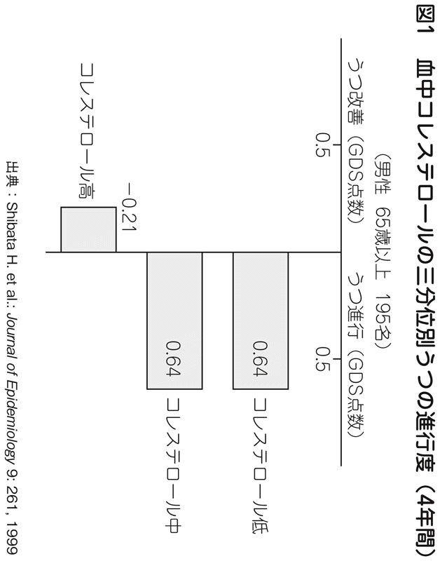
高コレステロールによる動脈硬化のリスクは抑えたいところだが、あまりにもコレステロール値を抑えてしまうと、逆にうつになりやすくなり、健康度を大きく下げてしまう。心が苦しい状態というのは、いうまでもなくＱＯＬの低い状態であるから、うつを防止するための対策も、健康づくりには欠かせない要素である。
新しい薬を信じるな
一般的に、医者は新しい薬を使いたがり、患者もそれを望んでいることが多い。新しい薬は、古い薬よりは効果が高く、逆に、副作用は減っているとされる。しかし、新しい薬には問題点もあることをよく知っておかないといけない。
それは、新しい薬が厚生労働省の認可を受けることができたのは、あくまでも短期的な効果と、短期的な副作用についての研究が基になっているということである。その薬を一〇年飲み続けたときの副作用について審査されて、認可されているわけではないのだ。つまり、新しい薬には長期的なエビデンス（科学的根拠）がないのである。新しい薬というのは、一見安全なように見えて、実は、長期的な安全性がまだ確認されていない薬である。
薬というのは、簡単にいえば、化学反応を起こさせて、体に変化をもたらすためのものだ。化学反応を起こさせるわけだから、薬が効いている時間帯に検査をすれば、コレステロール値が下がっていたり、血圧が下がっていたりするのは、いわば当たり前のことだ。数値を見た医者に「数値が下がりましたね。正常になりました」と言われると、大喜びをしてしまうのだが、そのようなことで喜んでいてはいけない。
体内の特定の物質に化学反応を起こさせることは、実は、それほど難しいことではない。あるターゲットの数値を化学反応によって下げただけであって、別の数値が悪化しているということもありうる。薬の化学反応の結果、コレステロール値は下がったが、肝機能の数値は悪化したというようなことはよくある。
アメリカでは薬の効果についてエビデンスが求められる。エビデンスというのは、薬を飲んだときに、ターゲットの数値が下がるかどうかというデータのことをいうのではない。その薬を飲み続けたときの五年後、一〇年後のある病気の予防効果や生存率や寿命ののびなどのデータのことをいう。また、手術などにおいては、たとえば乳ガンの手術をして乳房を切りとってしまったときと、少ししか切りとらずに放射線治療をしたときの五年後、一〇年後の生存率を比べてどちらがよいかというようなデータのことである。
端的にいえば、五年、一〇年経たないとこの手のエビデンスのデータは出てこない。
アメリカの場合は、このような五年後、一〇年後のエビデンスのない薬に対しては、保険会社がお金を出さない傾向になってきている。だから、各製薬会社は必死になってエビデンスのデータを出そうとしている。ところが、日本では、五年後、一〇年後の生存率などのデータを出さなくても、薬を飲んで一週間後のコレステロール値が下がったとか、一週間後の血圧が下がったというだけで、簡単に薬の認可が下りてしまう。
また、日本では、医療保険の審査も簡単に通ってしまう。血圧が低い人に血圧降下の薬を出せば、保険審査ではねられることがあるが、血圧の高い人に血圧降下剤を出した場合には、はねられることはない。ところが、アメリカでは、血圧の高い人に血圧降下剤を出したときでも「五年後のエビデンスがない」という理由で保険会社が金を出さなかったりする。
日本の製薬会社の場合は、エビデンスを出すことに真剣に取り組むと、自分たちにとって好ましくないエビデンスが出てしまって、認可取り消しになりかねないため、エビデンスを出そうとする姿勢が弱い。結局、エビデンスなどはまったく調べずに、短期的な都合のよいデータだけで薬を販売してしまう。
仮にエビデンスを探す場合でも、外国のデータをそのまま持ってきて流用しているのが実情だ。しかし、コレステロールの薬のエビデンス一つとってみても、外国のように肉をたくさん食べている国のエビデンスが日本に流用できるとは限らない。そのような基本的な検証すらしていないで、エビデンスを流用しようとしているのである。
要するに薬に対する考え方を、私たちは変えなければいけないということである。数値を下げるだけの薬には、薬としての意味はあまりなく、その薬を飲み続けたときに寿命がのびるかどうかが、薬としての一番重要な点である。
血圧は少し高めのほうがいい
読者のみなさんは、高齢の人たちを見ていて、不思議に感じることはないだろうか。私は、高齢者を見ていると、少し太めで脂ぎったような人のほうが、食欲旺盛で、元気があって、イキイキとしている感じがする。それに対して、スリムな人のほうが、やや不健康そうに見えてくる。
前者の少し太り気味の人は、おそらくコレステロール値も高く、血圧も血糖値も高めなのではないかと思うが、そういう人たちのほうが、元気そうに活躍をしていたりする。
実は、これはある意味で当然のことといえる。若いうちはともかく、高齢になってくると、血圧が低すぎると脳に酸素が行きにくくなるし、血糖値が低すぎると脳に栄養が行きにくくなる。脳に酸素や糖分が送られなくなると、脳が十分に働けない。そういう意味では、少し血圧が高めで、血糖値がやや高めの人のほうが、脳に栄養が行きわたって元気になっても不思議ではない。副作用のある薬を常用してまで、無理に血圧や血糖値を下げる必要はないのである。
次のデータを見てほしい。図２は、年齢別に血圧を下げる薬を飲んだ場合と飲まなかった場合で、心臓や脳の血管障害による死亡率がどのくらい変化するかを示したものだ。六〇代のうちは、降圧治療をしたほうが死亡率は下がっているが、年齢が高くなるにつれて、降圧治療をしてもしなくても、死亡率にはそれほど変化がなくなっている。こうしたことが明らかになるにつれ、日本高血圧学会の降圧目標値は、高齢層に関しては引き上げられている（図３）。また、浴風会病院で行った血圧別の生存率の追跡調査（図４）によれば、血圧が非常に高い群においては死亡率が高いけれども、血圧がやや高めの群と、血圧が正常の群では、死亡率にほとんど差はなかった。つまり、血圧がやや高めであるというくらいなら、必ずしも降圧治療をする必要はないし、血圧が正常値の人と同じくらいに生きられるのである。多少の血圧の高さはそれほど気にする必要がないということである。
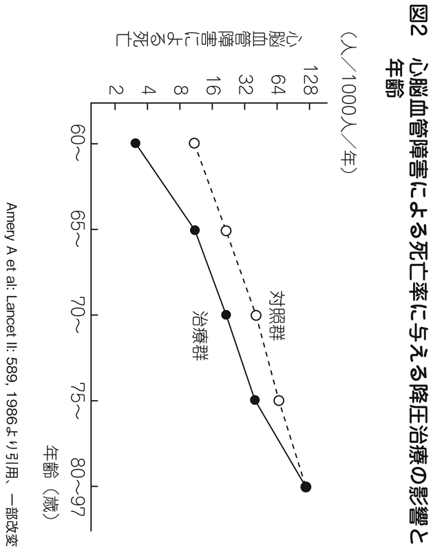
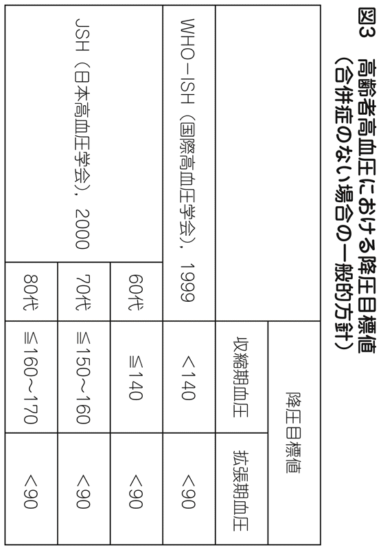
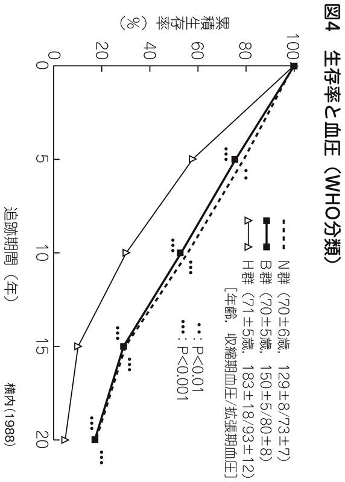
次に、コレステロール関連のデータを見てみよう。
小金井市の高齢者の追跡調査では、コレステロールの値を、低い（Ｉ）、やや低い（II）、やや高い（）、高い（IV）の四分位で分類した場合、コレステロールがやや高め（）の群が十年後に最も死亡率が低いというデータになっている（図５）。
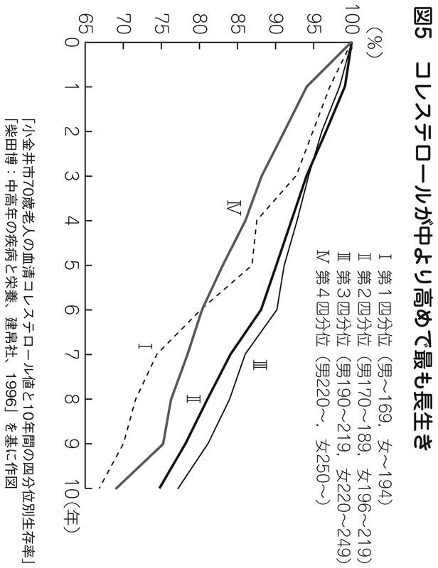
図６は、アメリカで発表されたコレステロール値と死因別の死亡率との関係のデータだ。コレステロール値が高い群では、虚血性心疾患が多くなり、脳卒中も多くなっている。コレステロールによって動脈硬化が起こりやすくなるので、心臓や脳の血管が詰まって病気になり、死に至る可能性も高くなる。しかしながら、コレステロール値が低すぎると、ガンで死亡する確率が高くなっている。
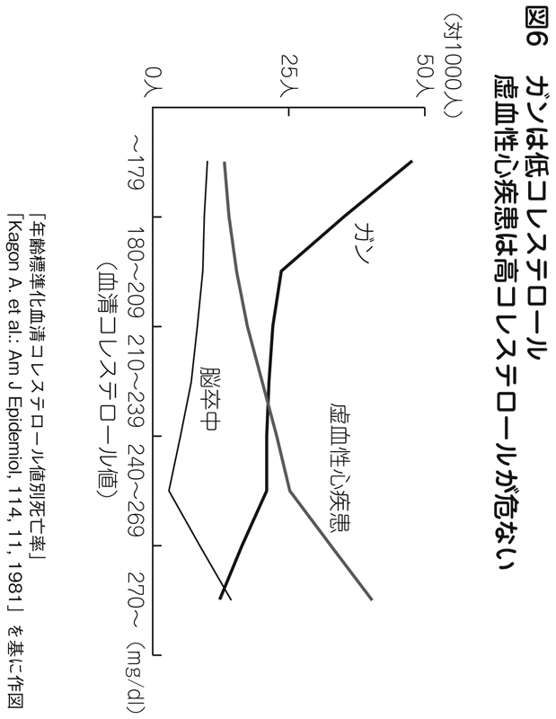
現在、日本の死亡率の第一位はガンである。三人に一人がガンで死亡している。予測されている範囲では、ガンによる死亡は、二人に一人になるといわれている。二一世紀は、ガンで死ぬ時代なのだから、「ガンになりにくいライフスタイルは何なのか？」ということを最優先で考えなければならないと思う。コレステロールを低下させることばかりを考えていると、ガンという身近なリスクが大きくなってしまう。そこをきちんと認識しておかないといけない。ちなみに、ガンになりにくいライフスタイルではっきりしているのは、タバコを吸わないということだけである。
コレステロールに関してもう一点つけ加えると、コレステロール値が高いほうが「うつ」は改善されやすく、コレステロール値が低いほうが「うつ」が進行しやすいというデータもあるし（図１参照）、また糖尿病に関しては、私のいた浴風会病院では、糖尿病の人のほうがアルツハイマーになりにくいというデータもある（図７）。
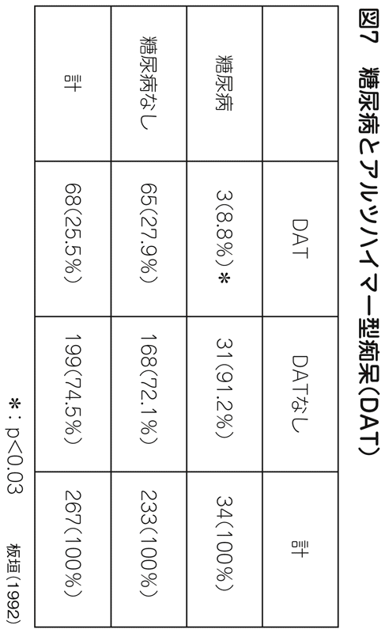
いずれにせよ重要なことは、何らかの数値を改善すると、別のリスクが高くなるというトレードオフの関係が起こるという点を認識しておくことである。
血圧、コレステロール、血糖値などを気にしすぎると、フィンランド症候群のように、かえって健康を失う場合もあるので、ほどほどにしておいたほうがよい。
ガンで死ぬ時代の新健康常識
先ほど述べたように、日本の死因の第一位はガンである。ガンのリスクを避けることが、健康法の優先順位の第一位になると思う。
ただ、一口にガンといってもいろいろな部位のガンがあり、対策は容易ではない。たとえば、女性の場合、セックスを若いうちから頻回にしている人のほうが子宮頸ガンになりやすく、セックスをしていない人のほうが子宮体ガンになりやすいといわれる。また、女性ホルモンが多いとなりやすいガン、なりにくいガンがあり、どんな対策をするとガンが減らせるのかということは一概にはいえない。
どのガンに対しても多少は効くものとして、アガリクスなどが有効といわれていたが、最近は、アガリクスの問題点が指摘され始めた。食品については、研究が進むことによって結論が変わることがあるという点は頭のなかに入れておいたほうがよい。あまり信用しすぎないようにすることが重要だ。
ガンに対して、おそらく効果があるだろうと広く認められ始めているのは、免疫機能を高める方法だ。免疫力にはガンの予防効果があり、免疫力が高まっていると長生きするということがわかってきている。
問題は、何をすると免疫機能が高められるかという点だ。これは精神医学の分野にも絡んでくるものだが、結局のところ、笑ったり、楽しい生活を送ったりすることが、確実に免疫機能を高めることに役立ちそうである。
図８は、柴田病院の伊丹仁朗博士がなんばグランド花月で行った実験のグラフである。漫才などを見ることでの笑いによってＮＫ細胞が活性化されたかどうかを調べたものである。ＮＫ細胞は、ナチュラルキラー細胞といわれ、活性度が高いほど免疫力が高いことを示している。
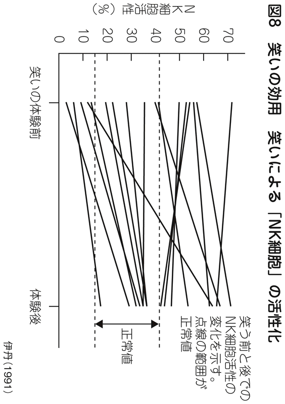
この実験結果では、ＮＫ細胞の活性がもともと高い人の群では、笑いによって活性がやや低くなっている人もいるが、活性が正常値の人はおおむね活性がやや高まっている。注目してほしいのは、ＮＫ細胞の活性が低い人たちの状態である。ＮＫ細胞の活性が低い人は、全員、笑いの後に活性が高まり正常範囲に入っている。免疫力の低い人にとっては、笑うことは一定の効果がありそうである。
ＮＫ細胞の活性は、うつ病とも関連性があるとされている。図９では、オーストラリアでのうつ病になった未亡人とうつ病になっていない未亡人を比較した研究であるが、うつ病になった未亡人のほうが、二カ月後のＮＫ細胞の活性が低くなっている。抑うつ的になっていて、何をしても楽しくないと感じている人は、ＮＫ細胞の活性が低く、免疫力が弱いのである。
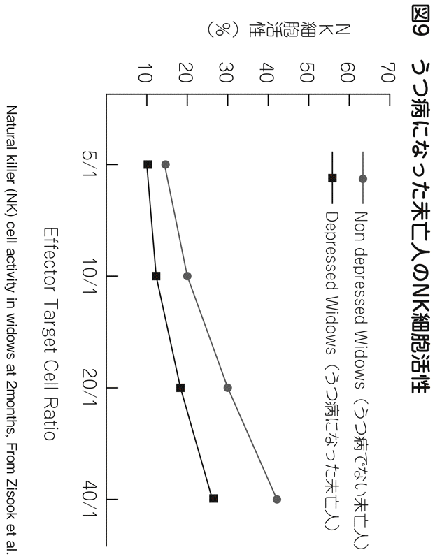
ちなみに、ＮＫ細胞は年齢とともに活性が変化をしていく。生後から二〇歳くらいまでは、ＮＫ細胞の活性はどんどん高まっていく。しかし、二〇歳を過ぎると、徐々にＮＫ細胞の活性は衰えていく。いわゆる老化現象が起こり、徐々に免疫力が下がっていくのだ（図10）。
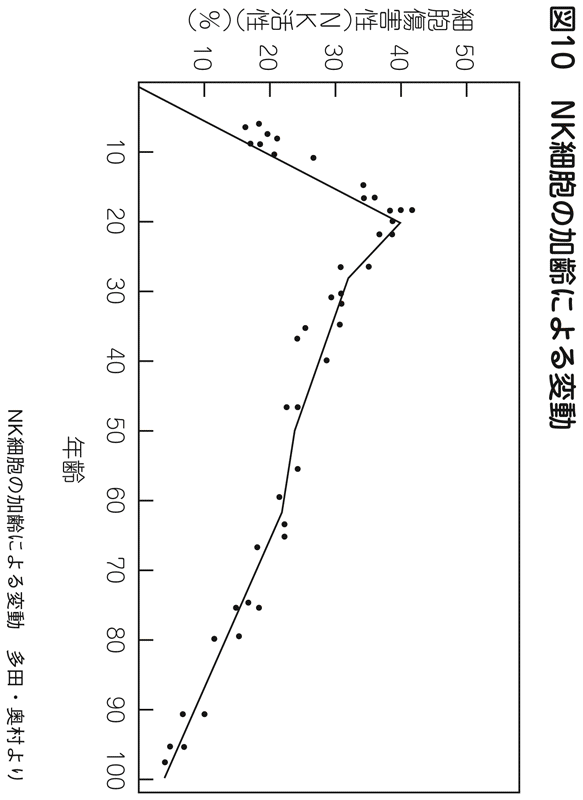
これらの点については、常識的に考えてみても納得がいくのではないだろうか。赤ちゃんや子どものうちは、免疫力が弱くて病気になりやすいが、成人になると免疫力が高まって病気に強くなる。しかし、歳をとって高齢者になると、再び免疫力は落ちていく。インフルエンザなどが流行するとき、乳幼児や高齢者は特に気をつけなければいけないといわれるのは、そうした免疫力の弱さと関連している。
成人の場合は、免疫力を高めるには、うつを予防し、楽しく、笑いのある生活を送ることが最も効果がありそうである。そのためには、血圧や血糖値、コレステロールなどにこだわって、「肉はダメ」「脂っこいものはダメ」「塩分のとりすぎはダメ」「甘いものはダメ」「運動不足はダメ」とダメダメの生活をするよりも、健康診断の細かい数値は気にせずに、楽しく生活をするくらいのほうがいい。禁欲、粗食の生活ではなく、楽しく快適に生きることである。
肉食のすすめの妥当性
「病気になりたくなかったら、食べる肉の量を減らしなさい」といわれる。しかし、これほどあてにならない健康法もない。
肉が目の敵にされるのは、肉を食べるとコレステロール値が高くなり、心臓疾患のリスクが高くなるからである。コレステロールについては、まずアメリカで問題視され始め、それが日本に伝わってきた。ところが、ここに重大な見落としがある。ご存じのように、アメリカというのは、大きなステーキをたくさん食べる国であり、日本人とは肉の摂取量がまったく異なる。アメリカで肉の摂取を減らす運動が始まったとき、アメリカ人の平均的な肉の摂取量は一日二八〇グラム程度だったそうだ。当時の日本人の肉の摂取量は一日六〇グラム程度。桜美林大学大学院教授の柴田博先生によれば、一日の肉の摂取量は一二〇～一三〇グラムがちょうどいいそうである。これらの数値に基づいて考えれば、アメリカ人は肉を半分くらいに減らさなければいけないので、「食べる肉の量を減らそう」という運動が始まったのも頷ける。残念なことに、日本の医師たちは「アメリカの医療は最先端であり、アメリカでやっていることが正しい」という思い込みから、日本人に対しても肉の摂取を減らすように運動を始めてしまった。本当は、日本の場合は肉の摂取量を増やさなければいけなかったくらいなのである。
先ほども述べたように、肉を減らすとコレステロール値は下がるが、反対にガンのリスクは高まり、うつのリスクも高まる。簡単にいえば、肉を減らすと元気がなくなってきてしまうのだ。
実際に、周りの中高年の人たちを見ていても、元気な人たちのなかには、肉をたくさん食べていて、少し脂ぎっていて、高血圧気味の人が多い。ちなみに、長寿の人が多い沖縄では、元気な高齢者たちは豚肉をたくさん食べているそうだ。
肉をとらずに、魚と野菜を中心にした食生活では、元気は出てこない。あえてたくさん食べる必要はないけれども、普通に肉を食べていればいいのである。肉を減らせというアドバイスには、総合的に見たメリットはあまりないと思ったほうがいい。
貝原益軒の時代から、粗食が健康によいといわれてきたので、それはとても説得力があるように思われている。しかし、免疫力を高めてガンを予防するには、おいしいものを食べ、食事を楽しみ、生活を楽しんだほうが有効だということが明らかになりつつある。
心にいいことが現役年齢をのばす
ここまで述べてきたように、現在の健康常識はあまりあてにならないし、医者も健康でいるための方法についてはよくわかっていない。正直なところ、私も何が本当に健康につながるのかは、わからない点が多い。ただ、一つだけ確実にいえることは、心を健康的にしておくことは、体にとっても、寿命にとってもよい影響を与え、その弊害は少ないということである。
体の治療においては、薬を使わざるをえないので、ある部分の治療が行われると、多かれ少なかれ何らかの副作用が出てしまう。食事においても、ある食材を摂取することにメリットがある一方、その食材を過剰に摂取することによるデメリットも考えられる。
それに対して、心の場合は、心を楽しくすることによる心身へのデメリットは考えにくい。あまりにも楽しすぎて、より大きな刺激が欲しくなるというようなことはあるかもしれないが、現実問題として、それほど楽しいことばかりが続くことはありえないので、心配する必要はないだろう。
仮に、心を楽しくすることが体に悪影響を与えると仮定しても、それでもＱＯＬが上がるというメリットだけは確実に得られる。この点が、他の健康法と大きく違うところといっていいのではないだろうか。多くの健康法では、「肉を我慢しなさい」「タバコをやめなさい」「ダイエットしなさい」など、何らかの我慢を強いられる。タバコをやめれば健康につながることはほぼ間違いないとわかっているけれども、つらい思いをしてタバコを我慢し続けると、ＱＯＬが下がることも事実である。
我慢型の健康法は、そろそろやめたほうがいいのではないだろうか。もっと人生が楽しくなるような健康法を考えていくべきだ。ＱＯＬを含めて考えると、楽しみ型の健康法のほうが、心身によい結果をもたらすはずである。
働きバチではダメなのか？
日本人は、働きバチで、働くことにしか生きがいを見つけられないとよくいわれる。もちろん、当たっている面もあるとは思う。しかし、働くことを生きがいとすることに対しては、世間から非難まで受けることがある。夜遅くまで働こうものなら、それだけで「会社人間」というレッテルが貼られてしまう。
ところが、中高年を「働きバチ」と非難している人が、若い人たちには、生きがいのある仕事を求めろなどと、矛盾したことをいっていることもある。
私たちは「働く」ということについて、もう一度考え直してみたほうがいい。働きバチと非難されるけれども、それが本当に悪いことなのかどうか。仕事を生きがいとすることが、なぜいけないのか。その反対に、人生、仕事だけで本当にいいのか。定年で仕事を失った後、どうやって生きていくのか。さまざまな角度からの問いかけが必要になっている。
特に、中高年になってきたら、働き方も含めて自分を振り返ってみることが重要ではないかと思う。
四〇代、五〇代になってくると、体力も気力も落ちてきて、若かったころのように仕事をすることが難しくなってくる。これ以上、頑張ってもたかが知れているし、かといって、働くこと以外に生きがいを見つける手段もないし......。
いろいろ悩むことはあるが、定年を迎える前に考えておくことはムダではない。本書のテーマである「現役年齢」をのばすためにも、非常に重要なことである。一口に「現役」といっても、仕事をバリバリやって現役を続ける人もいるだろうし、趣味の世界で活躍して現役生活を続ける人もいるだろう。どんな「現役生活」を送るかは、その人の価値観次第である。
働くことが生きがいだから悩みも出てくる
ヨーロッパでは、「働くこと」は「所詮、金を稼ぐためのもの」と考えている人が少なくない。そのような人たちは、「本当の自分はアフターファイブにある」という発想をすることが多く、現在でも「もっと早く定年を迎えたい」と言っている人たちが少なくない。典型的なのはフランスで、労働はあくまで、レイバー（labour：もともとの意味は苦役）だと考えている人が多いようだ。だから労働組合は定年を若くしろといっているくらいだ。その意味では、日本とは発想自体がまったく違っている。
ヨーロッパの失業率がなぜ深刻かといえば、一つの理由は、いうまでもなく、食べるための働き口がないからである。そして、もう一つの理由としては、福祉を受けることに対する抵抗がないため、「失業しても、福祉で食べられればそれでいい」と考える人がたくさんいるためだといわれている。
ところが日本では状況が異なる。日本人の場合は、自分のやりたい職業を選り好みしていることによって、失業率が高くなっている面があるのだ。働くことに対して、「やりがい」や「生きがい」を求めているから、やりたくない仕事には就きたくない。それが、３Ｋといわれるような職業が嫌われて、カッコよさそうなカタカナ職業がもてはやされる理由にもなっている。
中高年を迎えて、ふと「自分は仕事にしか生きがいがない、これで本当にいいのだろうか」という根源的な疑問が生じるのも日本人ならではだ。
私は、これは悪いことではないと思う。働くことに生きがいを求めている日本人にとっては、中高年になって、定年退職が近づいてきたときに、悩みを持つのは当然のことだ。
むしろ、悩まない人のほうが日本人的な発想からすると、珍しい人といえるかもしれない。フランス人のように、働くことを「苦役である」と思って、割り切って働いている人ならともかく、働くことに少なからずやりがいを見いだしていた人が悩むのは当たり前のことである。また、四〇代後半、五〇代、六〇代で、きちんと「働くこと」について悩んだ人のほうが、その後の人生をうまくコントロールしていけるのではないだろうか。
会社からのプレッシャーをはねのけろ
現在の日本の経済社会的な状況を考えれば、業績が右肩上がりでのびてきたこれまでのような明るい見通しは望めない。また、「年功序列制度の廃止」と「成果主義」という妙な組み合わせが流行ったせいで、「中高年邪魔者論」なるものまでが出てくる始末である。そのような論調が横行したために、四〇代、五〇代の人たちは、「果たして定年まで会社にいることができるのだろうか」「会社にいていいのだろうか」という大きな不安を抱えることになってしまった。
結論をいってしまえば、四〇代の人であろうが、五〇代の人であろうが、よほどいい条件のヘッドハンティングを受けるか、あるいは将来性のある起業をするかのいずれでもない限りは、どんな不安を抱えていようとも、今の会社に居座るべきだと思う。賃金体系が見直され、終身雇用制が崩壊したということがあったとしても、会社に居座っているのが結果として一番高い給料をもらえる確率が高いだろう。
「居座る」というのは、ネガティブな言葉として響いたかもしれない。しかし、私は決して消極的な意味で、居座れといっているのではない。人間の能力特性を考えたときに、それがベターだと考えるからである。
人間の能力特性、特に脳の能力特性を見てみると、中高年になれば新しいことを覚える能力よりも、古いことをより発展させる能力のほうが断然高いということがわかっている。これは、若い人にもある程度いえることであるが、年齢が高くなるにつれてそうなってくる。つまり、これまでやってきた仕事が自分の能力を最も発揮できる仕事であるということなのである。
多くの会社の中途採用募集において、経験者が重視されているのは、何事も、経験者のほうが高いパフォーマンスを発揮できる可能性が高いからである。新しいことを始めるときには、どうしてもパフォーマンスは下がる。
意欲があって、「新しいことを始めてみよう」と考えるのはすばらしいことであるが、確率的にいえば、従来のスキルを発展させたほうが自分の能力を発揮しやすい。スキルが古いといわれようが、知識が古いといわれようが、過去の成功体験にとらわれすぎているといわれようが、新しいことを始めるよりは、能力を発揮できるものである。
そういう意味で、私は、より積極的に能力を発揮するために、会社に居残るべきだといっているのである。
私自身の心情としては、新しいことを始める人や、何でも試してみようとチャレンジする人はとても好きだ。「もうすぐ定年だから思い切って起業して新しい仕事にチャレンジしよう」と考える人も、好きである。
しかし、アドバイスを求められたら、私としては、確率論に基づいて、幸せになる確率がより高いほうをおすすめする。四五歳を過ぎた人は、会社からどんなに「辞めろ」というプレッシャーを受けたとしても、今やっている仕事を続けるべきだ。プレッシャーに負けて、辞めてしまうのは賢くない選択だと思う。
働いている人のほうが長生きしている
面白いデータを紹介しよう。日本で高齢者の就業率が高いのは、長野、山梨、鳥取といった地域だが、これらの地域では一人当たりの老人医療費が全国平均に比べて安いという事実がある。一方、高齢者の就労率が低い福岡、北海道、大阪、長崎は老人医療費が高いのである。このデータを見る限り、働いている人ほど健康であるということができる（図11）。
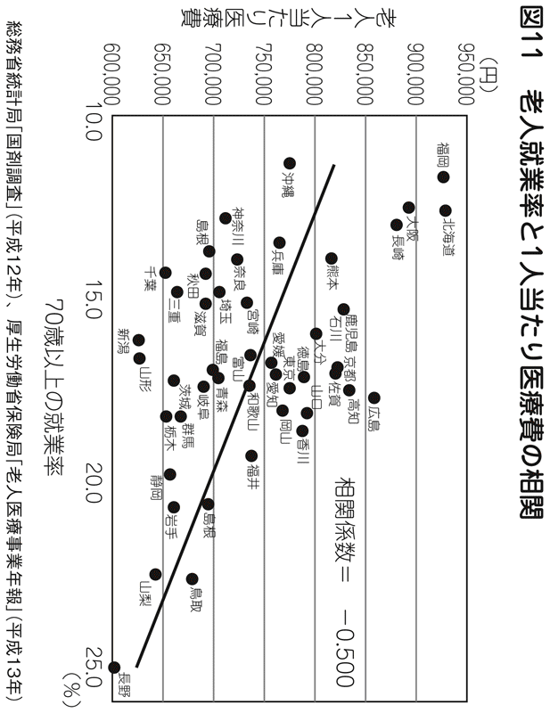
もう一つ興味深いのは、高齢者の就業率が日本で一番高い長野県が、男性の平均寿命で日本一だということ（図12）。これを裏返せば就労率が低い県は平均寿命が短いことになるのだが、その傾向もデータで裏づけられている。働くことがいかに長寿に寄与するかということを示しているとはいえないだろうか。
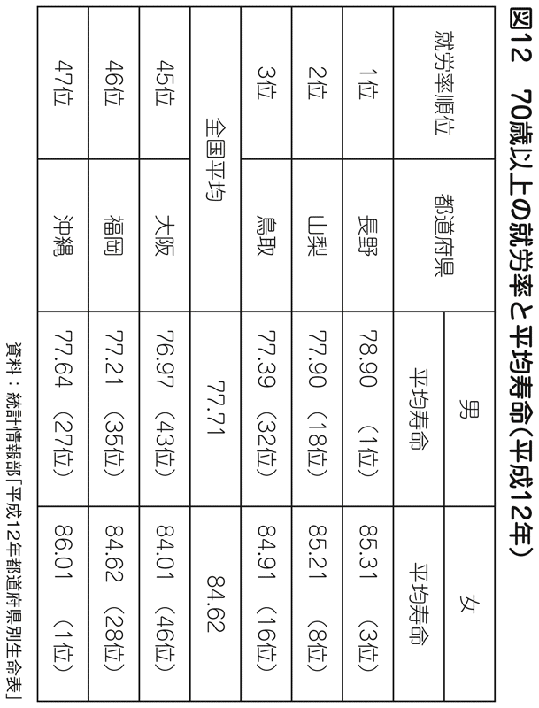
「寿命が長い県」というと、すぐ沖縄を思い浮かべるかもしれないが、沖縄県で長寿なのは実は女性だけだ。沖縄県の女性の平均寿命は全国一位である。ところが、同じ気候風土に住み、同じものを食べ、同じようなＤＮＡを持っているはずなのに、沖縄県の男性の寿命は日本の平均にも及ばない。ちなみに沖縄の高齢者の有業率は全国最下位である。
これらのデータからいえることは、働くことは健康のためになる可能性があるということだ。高い会費を払ってフィットネスクラブに通わなくても、「働けば働くほど健康長寿になる」と思えば、嫌な仕事でも、耳栓をしてエクササイズをしているつもりになればいい。会社から「辞めろ」というプレッシャーを受けても、それには耳栓をして、健康づくりのために働けばいいのだ。
逆にいえば、仕事を辞めてしまうことは、健康に悪いことだと思ったほうがいい。次に働く先の見込みもないのに、早期退職するなどということは、絶対してはいけないことである。
中高年ほど本やマンガを読んでいる
これからは若い人を大事にしなければいけない時代だということが、よくいわれている。しかし、私は、それは間違いではないかと思っている。高齢化が進むということは、高齢者が消費の主役になるということである。当然のことだが、高齢者が必要なもの、高齢者が買いたくなるものをつくらないと売れなくなる。
あまり知られていないことだが、今や月刊誌や週刊誌の主要な読者は高齢者たちである。ビジネスマンに売れていると思っている人も多いようだが、オピニオン誌に近ければ近いほど高齢者が主力読者となっている。にもかかわらず、三〇代、四〇代の若い編集長が起用されているのが実情である。それで売り上げがのびているかといえば、決してのびてはいない。
部数がのびないために、若い読者層を開拓しようとして、若い編集長を起用しているのではないかと思うが、活字離れのためか若い読者の開拓はあまり進んでいないのが現実だ。一方で、『いきいき』のような高齢者向けの雑誌が非常に売れている。五〇代、六〇代の人たちが、編集部に集まって、自分たちが読みたい雑誌をつくっているからあれだけ売れているのである。
序章でも触れたが、五〇代、六〇代といえば、まだまだ現役の「島耕作」世代である。島耕作が支持されるのも、サラリーマン経験のある作者の弘兼憲史さんが「自分の世代の夢」を描いているからだ。
島耕作シリーズのすごいところは、劇画マンガなのに、いい歳になったオヤジたちが読んでいることだ。弘兼さんは、自分の世代が求めているものを知っているから、自分の世代の人に売れるマンガを描くことができるわけだ。『黄昏流星群』が読まれるのも同じ理由だ。
今の中高年は劇画世代である。大学生がマンガを読むことがオドロキをもって語られていたのは昭和四〇年代ぐらいまで。そのころの大学生は、現在は六〇代になっている。六〇代の麻生太郎外務大臣は、マンガ好きということで有名である。今や六〇代でマンガを読む人たちがたくさんいる時代になってきているのだ。
また、最近では『ＬＥＯＮ』という雑誌が新しいブームをつくっている。どうしてブームになったかといえば、編集者たちが、自分が本当にやりたいライフスタイルを誌面で提唱したところ、それに共感した読者が大勢いたからである。
かつての雑誌編集者たちのなかには、「自分たちと違って読者はレベルが低いからそれに合わせた本づくりをしている」と平気な顔をして言っている人がいた。大きな勘違いである。「私はずっと時代の最先端を走っているから一般の人と同じものはちょっと......ね」と言っているようでは、読者もお客さんもついてこない。結果的に、読者と同じ視線でつくっている雑誌やマンガのほうが成功しているのである。
消費の主役は、これからは若者ではなく中高年世代である。その中高年の心を一番知っているのは、もちろん中高年たちだ。だからこそ、中高年がまだまだビジネス社会で頑張れるチャンスがあるのだ。
これからの消費の主役は中高年
残念ながら若い人の想像力では、中高年や高齢者のリアルな心理はわからない。商品開発にしても、接客にしても、若い人には対応できない部分がある。たとえば、お店で接客してもらう場合に、若い人に接客されたほうがうれしいときもあれば、少し歳をとった人にきちんと説明を受けたほうが安心できるときもある。スーツをつくりたいと思って、英國屋に行ったとする。年配の顧客係と会話をしながら、きちんと採寸してもらう。さりげなくアドバイスをもらったり、おすすめを聞いたりする。担当者が年配であればあるほど、信頼できる感じがするし、ちょっと贅沢な気分にもなる。
そもそも消費の主役はすでに中高年以降に移ってきている。若くないからといって遠慮する必要はまったくない。欲しいものを堂々と言えばいいのだ。人口構成の主役は自分たちであり、商品を買うのも自分たちなのだから、若い人たちに譲る必要はない。
たとえば、職場の会議で、若い人が何か提案してきたときには、「自分のほうが流行に敏感でいい商品開発ができると思っているんだったら、オレが買いたいと思うような企画を出してみろ」と言ってやればいい。それで、彼らが自分のフィーリングとピタリと合ったアイデアを出してきたら、座を譲ればいい。しかし、現実には、そういうことはめったにない。
消費の中心が若い世代だった時代には、若者が「オレたちは、こういうものが欲しいんだ」と言い、「そうだよな。自分たちが欲しいものをつくるべきだよな」と、その声に合わせて商品企画が進められた。女性ものでも、若い女性にウケるような商品ばかりが企画されていた。広告の分野では、Ｆ１といわれる若い女性層が主なターゲットで、起用されるタレントも若いタレントや人気モデルが主体だった。
それが今、逆転したのだ。若い人たちは一部の人を除けばお金を持っていないし、持っていたとしてもバブルのころのようには使わない。お金を持っていて、しかもそれを使うのは中高年世代である。だからこそ、「自分たちの時代」だということを堂々と主張し、「オレたちおじさんが欲しいものをつくろう」「私たちおばさんが欲しいものをつくろう」と発想したほうがうまくいきやすい。あるいは、「オレたちを年寄り扱いするような商品なんかつくるな」「私たちをおばさん扱いするような商品はいらない」と主張して、自分たちの満足する商品やサービスを生み出していくことが大切だと思う。それがわからない経営者がいたら、その会社は先が読めないダメな会社といっていいだろう。
イトーヨーカ堂にいたころの鈴木敏文さんが、洋服売り場に行って「君ら、この服、買うのか？」と聞いた話は有名だ。「買いません」と答えた社員に「自分が買わないと思うような商品を売るな」と言ったというが、そこにイトーヨーカ堂の商売の秘訣があると思う。
携帯電話にしても、若い人に発想をさせると、「年寄りは機械の操作が苦手だから、簡単にすれば売れる」と思い込みがちだが、それは大きな間違いではないだろうか。もちろん、シンプルなものを喜ぶ人たちもたくさんいる。しかし、一方では、難しい機能を使いこなして楽しんでいる高齢者たちもいるのだ。高齢者のなかには、昔アマチュア無線をやっていて、電子機械に詳しい人は多いし、コンピュータが電子計算機と呼ばれていた時代に、会社の情報システムを一からつくり上げた強者たちもいる。今のように出来上がったコンピュータや既存のモジュールを使ってソフトを開発している世代とはまったく違う実力を持っている。こういう人たちに対して、「高齢者はメカに弱い」と固定観念で決めつけてしまうのは、あまりにも失礼だ。また、中高年世代の代表である団塊世代はメカオタクが多い世代でもある。カメラについても「機能が簡単になって面白くない」と言っている人がたくさんいる。
テクノロジー分野に限ったことではないが、中高年の能力は、決して若い人にひけをとらないし、商品開発能力や、接客能力においても、若い世代に劣るというのはまったくのウソである。
ここで、一つのデータを紹介しよう。一九五〇年に日本人全体の平均年齢は二六歳だった。それが二〇〇〇年には四一・四歳になった。日本人の中心的な年齢が二六歳から四一歳になったのである。
一九五〇年代には二六歳に合わせた商品開発をすることは、人口構成から見ても、当然のことだった。マーケティングをするうえでは、若い世代にターゲットを絞ったほうがうまくいきやすかったであろう。しかし、その幻想をいつまでも引きずって、若者中心の商品をつくっているようでは統計的に見ても合理性がない。極端にいえば、今のメインターゲットは四一歳と考えていい。子どもたちには購買力はないから、実際のターゲット年齢の平均はもっと後ろにずれるだろう。
二〇〇〇年に四一・四歳だった国民の平均年齢が、その後、二〇〇五年までのわずか五年間で四三・一歳にまで上昇している。国立社会保障・人口問題研究所の中位推計では、二〇年後の二〇二五年には四八・三歳になると予測されている。メインターゲットになる消費者が明らかに変わってきていることを認識しなければ、時代に合ったビジネスを展開することはできないだろう。
このような時代に、「中高年の力は必要ない」と考える経営者は、明らかにおかしい。中高年こそが、マーケットのニーズをつかむ商品を開発でき、サービスを提供できるのである。中高年がいつまでも「現役」で働き続けることは、実は、会社の発展にとっても非常に重要なことなのである。
商品開発は中高年以降がすべき
これからますます消費者が高齢化する。会社経営者も、若者だけに商品企画をさせていても売れないことに早晩気づくはずだ。中高年向けの商品を開発するには、若すぎてはわからないことがたくさんある。
ハンディネットワークインターナショナルの春山満氏の商品が売れるのは、自身が障害者の立場で開発しているからである。春山氏が起業に至ったきっかけ――それは消費者不在の医療・介護現場の実態を目の当たりにしたことにあるという。
中高年マーケットも同様だ。たとえば衰えのパターンなどはその年齢にならないとわからない。高齢者が増えたからエスカレーターをつくることが決まったとしよう。そのときに若い人が発想すると、まず上りのエスカレーターをつくる。ところが、高齢者は、上りよりも下りのエスカレーターを求めている。なぜなら、下りの階段が怖いからである。ところが、若い人は上りのほうが大変だろうと思ってしまうのだ。
若者が中高年を勝手に年寄り扱いすることで、中高年の消費ニーズを逃してしまう場合もある。たとえば、若い人に高齢者のための都市計画を出させたとしよう。彼らはテレビで見た高齢者のイメージから、年寄りは東京の巣鴨が好きだと思い込んでいるかもしれない。「これからは巣鴨を開拓しなければいけない」と思って、巣鴨を開発するプランを上げてくる可能性がある。しかし、団塊の世代の人たちが引退後に、果たして巣鴨に行くだろうか。巣鴨なんて行ったことがないという人だらけになるのではないだろうか。
これまでずっと銀座で遊び歩いていた人に、「巣鴨を再開発しましたからぜひ来て下さい」と言ってもムリだろう。買い物だって、食事だって、東京・新宿、大阪・梅田のような繁華街にしか行かない人も多い。だいたい、島耕作が巣鴨で遊ぶ姿を想像できるだろうか。若いころから百貨店に行っていた人たちをいかにしてそこにつなぎ止めるか、東京・銀座で飲み食いしていた人たちを定年後もいかにして銀座に来させ続けるか、ビジネスのカギはそこにあるはずだ。
では、銀座では何を一番最初にするべきなのか......。たとえばタクシー乗り場をもっと利用しやすく、あまり歩かなくてもいい位置に設定するといった視点を導入することも必要だろう。でも、そういったことは、若い人は気づかない。元気のある若い人は、タクシー乗り場がどこにあってもそこまで歩いていくし、あるいは、タクシーなどには乗らずに電車で帰るかもしれない。やはり、経験のある年配者の意見を取り入れて都市計画をしていく必要がある。
銀座という街は、七〇代の人がバーで飲んでいて似合う街だ。小さな古い雑居ビルがたくさんあって、クラブや飲食店がそうしたビルに入っている。エレベーターもないから、細くて急な階段を上り下りするのだが、私など体力がなくて三階ぐらいまで上るのがかなりしんどい。歳をとったら無理だろうなあと思ってしまう。傾斜が急な階段は今の私でもかなり怖い。だから、そこに高齢の人が加わって計画を考えていく必要があると思う。
中高年には、街づくりも、商品づくりも、店舗開発も、企画を含めていろいろとやれることがある。アイデアを出すだけなら体力もいらないし、年齢を重ねた強みも発揮できる。若いときと違って、「これはこうしたほうがいいだろう」と提言するときにも遠慮せずにものが言える。
人望やマネジメント能力を生かす
中高年の能力特性を生かすという意味では、もう一つの大事な仕事として、マネジメントが挙げられる。年功序列から能力主義に変わったとはいえ、日本人には長きにわたる慣習があり、自分よりも若い者に使われるのはイヤだという人が多い。抜擢されたほうも、年上の部下は使いにくい。また、若者のなかには、自分よりかなり年上の人に使ってもらったほうが安心するという人も少なくないようだ。
たとえば、七〇代の野村克也氏は現役の監督をしているが、このくらいの年齢の監督に使ってもらえると、三〇代後半、四〇代のベテラン選手も安心感があるのではないだろうか。長島茂雄氏も、王貞治氏も、世間の年齢区分からいえば高齢者であるが、高卒ルーキー、大卒ルーキーの選手で、「こんなに歳の離れた高齢者に使われるのはイヤだ」などと思っている選手はいないと思う。使われるほうからすると、年齢の高い上司はイヤな存在ではなく、むしろ、とても安心感を持てる上司といっていい。その面では、中高年の人がいつまでもマネージャー職を続けていても、それほど迷惑な話とはいえないだろう。それなりの人望と実力のある人なら、上司として居座り続けてもかまわないのだ。
もし、プロ野球の監督に定年制があったら、どんなに優秀な監督でもある一定年齢になると辞めなければならなくなる。このようなシステムは、本当の実力主義ではない。球団が、故・仰木彬監督や野村監督や王監督に就任をお願いするのは、「この人にマネジメントをお願いすれば勝てる！」と思うからである。年齢は問題ではないし、下がつかえているというようなことも、勝負の世界ではまったく関係がない。それが本来の実力主義である。「若い人を登用するのが実力主義」と勘違いしている人が多いが、「高齢者を登用するのも実力主義」である。
とはいえ、野村監督や王監督が、現役プレーヤーとして活躍できるかといえば、それはまったく違う。野村監督や王監督が今でも四番打者として居座って出場していたらチームは負けてしまうだろう。出場機会を奪われた若手選手は反発するかもしれない。しかし、野村監督や王監督に求められているのは、プレーヤーとしての能力ではなく、マネジメント能力である。マネジメントであれば、七〇代だろうと、八〇代だろうと可能だし、「若い人のほうがいい」などということは言い切れない世界である。
これは会社組織でも同じではないか。高齢になってくれば、現場で働く能力は、たしかに衰えてくるかもしれない。しかし、現場で働いてくれる人たちをマネジメントする能力は、そう簡単には衰えないだろう。むしろ、年齢を重ねるほど、人間としての味が出て、人望も増してくる可能性がある。人望は、マネジメントの要素としては極めて重要だ。仕事は何もできなくても、人望が厚いだけで名経営者になれる可能性もあると思う。
もちろん、給与面では、マネージャーが一番たくさん給料をもらうというかたちにする必要はない。現場で働くプレーヤーとしての能力は若い人に負けているのだから、給料は低くなっても仕方がない。野球であれ、サッカーであれ、ありとあらゆるプロスポーツの世界において、選手より監督のほうが報酬が高いことは、まずない。年棒一億円の監督はめったにいない。
結論をいえば、マネージャーとして働き続けられるのであれば、報酬は減っても妥協して、能力を発揮できる機会をありがたく受け入れるべきではないかと私は思う。お金はある程度たまっているだろうから、それ以上欲を出さなくてもいいのではないだろうか。むしろ、働き場を失うことのほうが、「現役生活」を失ってしまって、一気に老け込んでしまう危険性がある。心と脳の元気を保つためには、お金よりも、自分が活躍できる場所を見つけることを選ぶほうがいい。
能力発揮の場と給与のバランスを考える
会社では職階と給与がセットになっているため、通常、定年になると同じ仕事を続けることができなくなる。「給料は一〇分の一でもいいから、会社にいさせて下さい」と言っても、まず残してもらえない。社内体系としても、上のポストがつかえてしまうと、若い人のモチベーションが下がってしまって、支障が生じるということも影響をしているのだろう。
会社においてはそのような現実的な壁があるから、プロ野球の世界と違って簡単にはいかないが、もし、嘱託というようなかたちで会社に残してもらえるチャンスがあるのなら、給料は我慢しても、会社に残って、自分のできる範囲で能力を発揮してみるのもいいのではないだろうか。それも「現役年齢」をのばす一つの方法である。
バブル崩壊後は、ずっと実力主義が叫ばれているが、本当に実力主義にするのであれば、年齢による差別の撤廃が必要だと思う。
日本でも最近「年齢差別禁止法」が議論されるようになってきたが、「年齢差別禁止法」の発祥地はアメリカだ。アメリカには、人種差別禁止法、性差別禁止法、年齢差別禁止法など、差別禁止の法律がたくさんある。ところが、アメリカにも差別が存在している。それは能力による差別である。
実に激しい差別なのだが、これがアメリカ社会では当たり前のこととして受け入れられている。彼らの理屈でいえば、差別を禁じる前提は「同じ能力があった場合」である。その前提に基づいて、人種や性や年齢などで差別をしてはいけないということになっているようだ。
年齢差別禁止の精神からすれば、仕事を辞めるのは、下がつかえているといった理由ではなく、能力で負けたからというのが本筋になる。「自分は能力では負けていない」と思うのであれば、どんなに高齢であろうが、職場に居座る道を考えてみるのも悪くない。ただし、若い人のことも少し考えて、自分の肩書きをはずしたり、給料大幅減を受け入れるといった配慮は必要だ。
能力を発揮できる場を与えてもらえるありがたさと、給与の低さ、このバランスが難しいところだが、「現役年齢」をのばすということに限っていえば、給料を度外視して、少しでも必要とされる場を選ぶべきである。
年配の相談者が社会で大いに役立つ時代
日本の会社には相談役というポストがある。相談役という言葉を聞くと、社長や会長を引退したあとに就任するエライ人のイメージになるが、会社と利害の絡まない長老的な存在が、会社にとっては重要な存在になる場合がある。『失敗学のすすめ』の畑村洋太郎先生が指摘していることだが、上司には打ち明けられないことを打ち明けて、それを匿名で解決してくれる人の存在があるかないかは、組織としてとても重要だそうだ。ひとりの人間が隠し通そうとする失敗が、後に重大な問題になることがある。そうしたことのヘッジになりうるのが、相談役の存在だという。
その相談役として、畑村先生が適任だといっているのが、会社と直接利害が絡まない定年退職後の人である。私もそのとおりだと思う。失敗を隠すとマスコミに激しくバッシングされる時代だからこそ、企業のなかで、相談役的な役割がますます必要になってくる。
長老や相談役が必要なもう一つの理由は、これも畑村先生の指摘だが、「会社になぜこんな決まりがあるのか」とか、「なぜこういうルールになっているのか」を知っている人の存在が必要だからである。たとえば、今行われている作業手順が昔と比べてずいぶん簡素化されている場合、それが、効率の見直しでそうなったのか、それとも単なる手抜きなのか、きちんとわかる人がいなければならない。
一九九九年に茨城県東海村のウラン燃料加工会社ＪＣＯで起きた臨界事故を思い出してほしい。この会社では、作業員がウラン溶液を混ぜる際に、日常的に本来の手順とは異なる取り扱いをしていた。おそらく最初は手順どおりにやっていたのだろう。だが、誰かがちょっと手を抜いてみた。事故は起こらない。もうちょっと抜いてみた。それでも起こらない。それが積もり積もっていくと事故のリスクが著しく高まっていく。昔はどれくらいのレベルだったのかを知る人がいないと、前と比べて「少しだけだから」といった認識で、本当の怖さを知らないままその場限りの判断をしてしまうことがある。
つまり、時系列でいろいろなことをわかっている人間が現場にいることが非常に重要なのである。三〇年前はどうだった。二〇年前はどうだった。こういう事故があったから、今こういうことをしているんだ。それらを知っている人がいないと、ただマニュアルを見て、「この程度の手抜きならいいのではないか」と安易に考える人が出てきてしまう。
耐震偽装問題も構図は同じだ。構造計算の偽装がなぜ問題かといえば、日本の構造計算の基準は非常にハードルが高いことを、現場の下請けの人たちがよく知っていることにある。彼らはそれがわかっているから、これぐらいは手を抜いても建物の構造はびくともしないという〝程度〟がわかる。一級建築士のつくった設計図はしっかりしているから、このぐらいの手抜きをしても大丈夫という加減を知っていて、実際に問題がなかったという経験もしている。こうして現場での手抜きが常態化していってしまったようだ。だから、設計段階で手を抜くと、手抜きの連鎖が始まってしまう。この手抜きの連鎖が、危険な建物をつくり出してしまったのである。
コンピュータのシステムも、ゼロから立ち上げた人たちがいなくなると、今の若い人たちでは、修理ができないという話を聞く。「コンピュータの世界＝若いエンジニア」というイメージがあるが、五〇代、六〇代にはすごい人がたくさんいて、これらの人の力を借りなければ、ビジネスが成り立たなくなっている。
こうした面を見てくると、高齢になっても、いや、高齢になったからこそ、経験を積んできたことが力になり、会社の価値になることがわかる。その豊かな経験を生かす方法を考えることからスタートすべきではないだろうか。
「定年になったらガードマン」と考える人もいるようだが、その発想は、どこかおかしい。本来は、ガードマンのような仕事は、屈強の若者にこそ向いている。これまでの仕事の蓄財を捨てるような仕事ではなく、生かせる仕事を見いだす努力が必要だと思う。
年齢を超えたワザと味
これまで、世の中では「どんどん若返っていこう」という時代の圧力がかなり強かった。政界でも、世代交代が進んでいる。しかしながら、民主党では急速な若返りによる失策が続き、七〇代の渡部恒三さんが国会対策委員長に就任したときには、国民から安心感を持って受け止められた。続いて、党首には小沢一郎さんが選出された。なぜ彼らに根強い人気があるかといえば、やはり安心感があるからだ。小泉内閣が誕生したときも、塩川正十郎氏が財務大臣として入閣し、国民から「塩じい」の愛称で呼ばれた。長老が一人入ると、みんなが安心感を持てるのだ。
政界に限ったことではないが、このまま若い世代に合わせた世の中になって、中高年が邪魔者扱いされてしまっていいのかどうか。中高年は、そうした圧力に対して戦っていく気概が必要だと思う。もしかすると、それが「現役年齢」をのばす最大の精神的な原動力になるかもしれない。
ビジネスの世界でも、中高年はメインの消費者になっていく。自動車メーカーであれ、家電メーカーであれ、高齢者が使いやすい商品を開発しなければ、生き残れない可能性があるし、またそれができれば世界的にも競争力を持つようになるだろう。高齢化は世界中の国のトレンドであり、ヨーロッパでも、アジアでも高齢化が進んでいる。
若い人向けのデジタル商品においては、価格競争が激しい。日本のメーカーと新興国のメーカーが競争をしたら日本のメーカーが負けてしまう可能性もある。しかし、高齢者向けの商品では、日本はよその国がまねできないものをつくることができる。デジタルなものはすぐにまねをされてしまうが、アナログなら負けない。熟練工がたくさんいる強みもある。
「刺しても痛くない注射針」の開発で有名な岡野工業の岡野雅行社長は七〇歳を超えて、世界のトップを走り続けている。岡野工業は従業員の平均年齢もけっこう高い。そういう人たちの技術は世界と戦える技術だということを再認識すべきだろう。彼らが走り続けているのは、彼らを抜く若者が出てきていないということでもある。
ただし、団塊世代の熟練工が定年を迎えて、みな引退してしまったら、日本は中国や韓国との価格競争に耐えられなくなるともいわれている。このような国家としての危機的な状況を避けるためにも、中高年はまだまだ頑張り続けなければいけない。中高年を大切にする社会にしなければ、国が危機を迎えるといっても過言ではない。団塊世代の職人には、もっと頑張っていただいて、若い世代を指導していただきたいと思う。
文化・芸能分野でも、第一線で頑張っている方は多い。一九四八年生まれのプリマドンナ、ステージ上の森下洋子さんを見て、その年齢を想像することができるだろうか。次々と若い才能がデビューするバレエの世界にあって、第一線で踊り続けている。三歳から始めたバレエ歴は実に五五年以上。若くて体力があってさえハードな世界にあって、年齢だけで考えれば、とっくの昔に引退していてもおかしくないが、ときに初々しく、ときにつややかに舞い、見る者を惹きつける。確かな技術に裏づけられた表現力は、年齢すら超越している。
同じことが、歌舞伎、狂言、舞踊や謡をはじめとした伝統芸能の世界でもいえる。気力、体力ともに緊張を強いられ、日々の練習を怠れば、それが所作に表れる。その世界にあって、若い人たちを率いている人たちは、誰もがけっこうな年齢だ。
誰もが彼らのようになれるわけではない。さすがに特別な存在だ。しかし、どんな分野であっても、若いときから積み重ねてきたワザは、いつまでも持ち続けていけるはずである。それを持ち続けていくことが、心身の健康に恵みをもたらす。
このように、年齢を重ねても若い人以上に「現役」で活躍し続けている人はたくさんいる。それが日本の強みである。その強みを生かすためにも、社会の主役である中高年は、もっともっと元気に、社会を引っ張っていかなければならない。日本の国の将来を考えれば、大半の人が六〇代で引退するのは、あまりにももったいない。
自分たちのパワーを政治にもぶつける
アメリカでは、ＡＡＲＰ（全米退職者協会）という団体が非常に大きな勢力を持っている。会員には五〇歳以上の人が三〇〇〇万人以上もいて、全米最大のパワーを持つ団体といわれる。意外に思われる人も多いかもしれないが、アメリカという国は高齢者が非常に強い国だ。若い人を大事にする国だと思われていて、実際にそれは否定できないが、高齢者も強い国なのである。何しろ、企業が高齢者に支払う年金財政のことで、「世界のＧＭ」が経営危機をささやかれたりしたほどだ。高齢者は大きなパワーを持っており、その力を背景に、一般の人が考えている以上に年金収入も得ているようだ。年齢差別禁止法を認めさせたのも、ＡＡＲＰである。
ところで、アメリカの高齢者は実際にどのような生き方をしているのだろうか。
いくつかのモデルがあるが、一つはいわゆる勝ち組の高齢者パターンだ。
とにかく若いうちに稼げるだけ稼いで、四〇代、五〇代で引退する。島を買うなどして悠々自適の生活を送る人もいる。フロリダや南カリフォルニア、フェニックスに引っ越して余生を楽しむ。非常にリッチな人たちといえる。
アッパーミドルの人たちは、この一〇年来の株高のおかげで年金配当が非常によくなっている。四〇一ｋ型の年金は、基本的には世代間扶助ではなく、運用益によって年金支給額が決まるため、今のところは高齢者の懐具合は悪くないようだ。ただ、逆にいえば、アメリカの株バブルがはじけてしまったときには年金が激減し、アメリカ経済を直撃するだろうといわれている。
一方で、負け組の高齢者はみじめなものだ。ナーシングホーム（要介護高齢者の医療福祉施設）などはあまり快適とはいえないそうだ。メディケアと呼ばれる高齢者を対象とした医療により、医療費は原則無料または低額ということになっているが、メディケアでは薬代が負担されないため、安い薬を買うためにカナダまで旅をするような事態もあり、いろいろな問題が起きている。アッパークラス、アッパーミドルクラスの勝ち組・準勝ち組の高齢者はいいとして、人口の半分を占める負け組の高齢者は、なかなか大変なようである。
年齢差別禁止法のあるアメリカでは、能力があれば仕事ができる。しかしながら、日本人と異なり、アメリカ人もフランス人同様、「できることなら労働はしたくない」というのが基本スタンスだ。
その一方で、歳をとっても、力があれば引退しなくてもいいと思っている人も多いようだ。レーガン大統領は七〇歳直前に大統領に就任し、八年間大統領を務めた。大統領職を終えてからもレーガン人気は続き、アルツハイマーになるまで（もうすでに発症していたという説もある）現役だった。また、アメリカの大学には九〇代の教授が何人もいる。能力があれば年齢は関係ないのだ。いずれにせよ、何の根拠もなく「若い人の発想のほうがいいから」とか「若い人に譲らなきゃいけないから」という年齢的なものを理由に辞めることはない。
ひるがえって、米国よりはるかに高齢者率が高い日本においては、能力があっても強制的に仕事を辞めさせる定年退職システムが存在する。改革を声高に叫ぶ与党も野党も、これだけ高齢者が増えているのに、若い人向けの国に日本を変えることが構造改革だと思っているようである。
人口統計を見ても、日本の主力層は中高年、高齢者なのだから、アメリカのようにもっと高齢者が声高に叫んで、政治に対してものをいうべきではないかと思う。高齢者が暮らしやすくなる政策をとらない政治家は、選挙で落とすくらいのことはできる。それだけの票数を高齢者は持っているのだから、自分たちの持っている巨大な力を発揮したほうが世の中が動いていくはずだ。
中高年はコストではない
日本の企業社会では、中高年は、高コスト扱いをされてしまっている。「コストが高いから中高年をリストラしなくてはいけない」といわれるともっともらしく聞こえてしまう。「中高年よりも、若い人にもっとチャンスを与えるべきだ」ともいわれている。しかし、これらは企業側に都合のよいウソのロジックだ。
中高年は、決して高コスト労働力ではない。たしかに、今は一〇〇〇万円以上の給料をもらっているかもしれない。しかし、今の中高年が若い時代には、非常に安い給料で、馬車馬のように働かされてきた。その点をまったく無視して、現在の給与額だけでロジックをつくるのは非常に問題である。企業側は、ここ数年の働きだけを見て「高コスト」と言い張る。しかし、期間を入社以来の三〇～四〇年に広げてみれば、中高年たちは、「最も低コスト」の労働力といっても過言ではない。トータルではコストがかかっていないのにコストが高いと文句を言うのは、おかしいのではないか。
五〇代以上の中高年、団塊の世代の人たちは、若いころは、「歳をとったら楽になるし、給料も上がる。だから若いうちは給料が安くても我慢しろ」と言われ続けてきた。今以上の残業を、実質的にサービス残業としてこなしていて、今の若い人たちより給料はずっと安かった。働けば働くほど会社に金を貸していくようなものだった。だから、ばかばかしくて、若いうちに会社を辞めることなんてできなかった。五〇代以上の人たちの大半がそういう経験をしているはずだ。
四〇代の人たちになると、それほど、会社で酷使されたわけではなくなっている。バブル期はボーナスというかたちで法外な給料をもらっていた人もいる。しかし、それより上の世代は、文句を言う権利がある。
「首を切るなら金返せ」といってもいい。五〇代の人たちは、若いころにもらわなかった分を今もらっているだけなのである。「中高年はコストが高い」というなら、「三〇年前の借りを返してから言え」といってやればいい。五〇代以上の人が今もらっている給料は、「働いている分＋若いころに貸した金の返金」である。にもかかわらず、「今は、経営環境が変化して会社も苦しくなっている。払いたくても、一〇〇〇万円なんてとても払えない」と会社側はいっている。
これは、借金まみれの破綻寸前の会社が銀行に債権放棄させたときと同じ構図だ。銀行が会社に「金を返してくれ」と言うと、会社は「潰れてしまうから返せない」と言う。そして、それがまかり通ってしまった。銀行と同じように、五〇代の従業員は会社に「若いころに働いた分の賃金を返してくれ」と言っているだけなのに、「高コストの中高年を雇っていたら会社が潰れてしまう」などと平気で言っている。金を借りている人間が開き直っているのとまったく同じ態度だ。
借りた金を返せないのなら、従業員に対して、せめて頭を下げ、事情を説明してお願いして引退してもらうところを、「辞めろ」と言わんばかりの失礼な対応をとっている。日本の繁栄の基礎を支えてきた人たちに対してその態度はないのではないか。
企業が中高年を軽視し、若い人を登用して若い人の給料を増やそうとしているのは、若い人の数が少ないからである。もし若い人の数が多ければ、若い人の給料を上げると会社が苦しくなるから、そんなことはできない。若い人が相対的に少なくなって、中高年が多くなってきたために、このような「中高年は高コストである」というロジックを使うのだ。
だまされてはいけない！ 中高年はここに大きな怒りを感じるべきだ。
もし、会社からリストラを宣告されて、どうしても抵抗しきれずに辞めざるをえなくなったら、一度くらい「二〇年前に貸した金を、利息をつけて返せ」と会社側に言ってやってもいいのではないか。
年配者が優遇してもらえるわけではない
定年までは、会社からきちんと給料を受けとるべきであり、リストラされそうになっても、可能な限り拒否すべきだ。定年後も、退職金、企業年金をきちんと受けとらなければいけない。これには、前述したように、若いときに会社に貸した金を取り戻す意味もあるから、相応の金額を要求すべきである。
しかしながら、定年後は、自分の能力に応じた金額以上はもらうことはできないと認識しておかないといけない。定年退職後も、「今までと同水準の給料を払ってほしい」と主張するのは、虫がよすぎる。定年時点で、会社との貸し借りの清算は一応終わるわけだから、その後は、適正価格というものを考慮すべきだろう。
前述したように、年齢差別禁止法の精神は、能力が同じなら、年齢で差別してはいけないということである。九〇の能力を持った二五歳の人と、九〇の能力を持った六五歳の人がいたら、年齢を理由にして二五歳の人を選ぶことはできない。しかしながら、能力が同じであれば、雇う側はコストを計算するのが当然である。二五歳の人が「三〇〇万円でやります」という仕事を、六五歳の人が「私はこの前まで一〇〇〇万円もらっていたのだから、五〇〇万円でなければやらない」と言ったら、採用者は堂々と二五歳の人を選んでいいのである。同じ九〇の労働力を得るために、安い三〇〇万円でやってくれる二五歳の人を雇うのは差別ではないのだ。ここには、アメリカ社会の特徴の一つである市場原理が働いている。
このような状態に置かれたときには、六五歳の人は「二九九万円でやります」と言わなければ、仕事を得られなくても文句は言えない。「三〇〇万円では生活していけない。だって、私には家族もある。二五歳の独身の人とは状況が違う。そこを配慮してもらえないだろうか」というのは、アメリカではまったく通用しない論理である。
年齢差別禁止法は逆差別も禁止している。つまり、年齢を重ねているからという理由だけで、優遇してもらう権利はないのである。年齢差別禁止法はアファーマティブ・アクション（積極的差別是正優遇措置）ではない。家族の事情があろうがなかろうが、九〇の労働力を発揮する一番安い金額を提示した人に、年齢に関係なく、その仕事は落札されるのである。
ただし、現実問題としては、二五歳の人が九〇の力を出せるとしても、六五歳の人であれば、経験知とか、知恵とか、相談能力といった目に見えない付加価値もあるだろうから、九〇よりも高い能力を出せると思う。値段のつきにくいものについてはまた別の話になるが、いずれにせよ、「五〇〇万円でなければ私はやりません」というような自分の都合だけで金額を決めるのではなく、競合者との関係を見ながら適正な価格で妥協しないと、仕事をする場を提供してもらえない。
「働けるならそれでいい」と割り切って、金額面では妥協するくらいのスタンスが現実的な方法といえるだろう。
起業するなら早めに準備する
現役時代をのばすには、六五歳だろうと、七〇歳だろうと、可能な限り会社に居残って、いつまでも会社で活躍し続けるという方法がベターだと思う。
が、新しいことを始めてみるという方法もある。たとえば、五〇代で会社を起業したり、六〇代でＮＰＯ（民間非営利団体）法人をつくったりするのも、現役時代をのばすことにつながる。
新しいことにチャレンジすると、気持ちにも張りが出て、年齢に関係なく若々しさを保つことができる。会社の仕事は「やらされている」という面が多少なりともあるだろうが、自分のつくりたい会社を興したり、自分のポリシーに基づいてＮＰＯをつくったりするのは、「やりたいこと」をやるのだから、モチベーションは非常に高くなる。これが脳にも体にもよい刺激となる。自分でつくった法人であれば、引退する時期は自分で決められるから、元気なうちはいつまでも現役でいられる。
サラリーマンのなかには、いつも接待費で飲みに行ったり、ゴルフに行ったりしていたために、退職したとたん、それらの遊びをいっさいしなくなる人がいるが、自分の会社をつくれば、自社の経費で遊びに行くことも可能であり、現役時代と変わらず、会社のお金でリフレッシュできる。定年になったとたんに交際範囲が狭くなり、家に閉じ込もりがちになるということもなくなるだろう。要するに、自分で起業してしまえば、苦労もあるけれども、フリーハンドの部分が大きくなるということである。
ただし、いずれ起業しようと考えている人は、五〇代、六〇代になってから起業を考え始めるのでは少し遅い。実際に起業する時期は五〇代、六〇代でも、頭のなかで計画を練るのは早い段階から進めておいたほうがうまくいきやすい。
定年後に自ら起業をして、他の人の起業も支援している人に聞いたのだが、定年後に起業してうまくいっている人は、みな四〇代のときから起業について考えていたそうである。人間は年齢が高くなるほど、残念ながら特に創造性の機能が少し衰えてきてしまうから、新しい発想を考えるのなら、若いときの脳を使ったほうがいいようだ。
また、何よりも困るのが、歳をとるほど気力が衰えてくることである。若いうちなら「苦しくても、頑張ってやり抜こう」と思えるが、歳をとってくると「ムリして苦しいことをする必要はない」「ムリして新しいことをやらなくても、お金は十分にある」などと、現状維持を望む気持ちが強くなってくる。新しいことをやるときには、気力の充実は絶対条件であるから、少しでも気力があるうちにアイデアを練って準備をしておいたほうがいい。
実際には起業をしないとしても、新しいチャレンジについて四五歳くらいから考え続けておくことは、脳の活性化という面でもムダにはならない。
流行している大人のための脳活性化のパズルやゲームをやらなくても、起業を計画して「どうやったうまくいくか」「どうやったら儲かるか」を考え続けるだけで、十分に脳のトレーニングはできる。それが脳の「現役年齢」をのばしてくれるし、うまくいけば実際に会社を興して成功することにつながるかもしれない。四〇代、五〇代の人は、会社に残ることが第一選択だと思うが、起業をすることを選択肢の一つに入れておくのも悪くないだろう。
いずれにしても、四五歳を過ぎたら、もう一度「自分にとって、仕事とは何か？」「自分にとって、働く意味は何か？」というテーマについて考えてみること。そして、働き方を工夫してみることである。それが仕事を通じて「現役年齢」をのばしていくための第一歩といっていい。
道徳論は忘れたほうがいい
日本では、健康論と道徳論が混同されていることが多い。それが中高年が現役生活をのばすに当たってネックになっていると思う。たとえば、おいしいものを食べてばかりいると健康に悪いとか、遊んでばかりいると体によくないといわれることが多いが、それは必ずしも正しい発想ではない。禁欲的な生活が健康につながるとは限らないのだ。
これは、仏教的な思想を受けて、道徳論が健康論に影響を及ぼしてしまっている結果だ。まじめで禁欲的なほうが健康によいという根拠はどこにもない。むしろ、最近の研究データでは、笑ったり、遊んだりしながら、面白おかしく生きている人のほうが健康的だとされている。心が楽しくなるような生活をしているほうが、体の免疫機能が高まって、健康を保ちやすいのである。精神科医の立場から見て、これは妥当な考え方といっていいと思う。
「いい歳をして」という言葉も、道徳観に基づくものだろう。何歳であろうと、人生を楽しむことはいいことであるし、それは健康につながってくる。道徳観、倫理観も大切だが、それに縛られない発想も必要である。
かつて「姥捨て山」はとても残酷なものとして描かれていた。本当のことかどうかはわからないけれども、実は、姥捨て山に行くと、おいしいものを好きなだけ食べることができて、好き勝手に恋愛もできて楽しかったという説もある。捨てられた老人たちは、けっこう自由な生活をしていたのではないかというのである。キノコ料理というのは、そういう高齢者たちが発展させたおいしい料理の一つではないかともいわれている。
ストイックな生活をすることは、必ずしも健康にはつながらない。それに明らかにＱＯＬを下げてしまう。人生においては、ストイックな生活をしなくても、つらいことや、厳しい状況がたくさん押し寄せてくる。だから、せめて意識としては、「生活を楽しもう」と考えておいたほうがいい。
中高年の人にはまじめな人が多いから「楽しく生きよう」と考えていて、ちょうどバランスがとれるくらいである。
楽しく生きていると、体内の免疫力が高まってくる。それは健康にもつながり、「現役年齢」をのばすのにとても効果がある。
趣味を楽しむ
趣味や嗜好は、年齢とともに変わっていくことがある。特に、若いころの趣味と中高年以降になってからの趣味は、変わることが多い。若いころは歴史に興味がなかったのに、中高年以降、歴史に興味が出てくるという場合もあるし、二〇代のときには一冊も読まなかった文学作品を、中高年以降に「面白い」と感じ始めることもある。聴く音楽も、若いころと中高年以降では変わってくることがある。若いときにはスポーツをまったくしなかったのに、中高年以降にダイビングやマラソンなどを始めて楽しんでいる人も少なくない。
また、異性の好みに関しても、若いころに好きだった異性のタイプと、中高年以降になってから好きになる異性のタイプは違うことがある。
このように、若いときには好きでなかったことが、人生経験を積んだ中高年以降になって好きになることはよくあることだ。
ところが、中高年を過ぎてしまうと、好みが変化することは少なくなるようだ。四〇代のときにカラオケが好きな人は、生涯カラオケ好きでいることが多いし、釣りが好きな人は高齢になってもずっと釣りを楽しんでいる。四〇代のときに風俗好きな人は、七〇歳になってからも風俗に通っているようだ。
つまり、四〇代以降になって「これは楽しい」と思えるものがあれば、それは七〇歳になっても、八〇歳になっても楽しめる可能性が高いということだ。四五歳を過ぎたら、自分が何をしているときに「楽しい」と感じるのかを見つめ直してみて、それを趣味の一つにするといいと思う。
カラオケ、音楽、ゴルフ、釣り、旅行、クラブ通いなど、四〇代、五〇代のうちから自分が楽しめることを追求していけば、生涯楽しめる趣味を見つけることもできる。あとはお金が続くかどうかだけの問題だ。四〇歳を過ぎたら、生涯楽しめる趣味をつくっておくことが、心身ともに充実した「現役年齢」をのばす有効な方法となるだろう。
音楽を楽しむ
世の中には、「若いときはロック、中高年以降は演歌」というイメージが定着しているが、それはまったく古い考え方だ。中高年以降になってもロックが好きな人は非常に多いし、音楽の好みと年代は関係がない。年代で音楽を決めるような固定的な考え方はやめたほうがいい。若い人から「えっ、こんなおじさんがロック？」と言われようと、自分の好きな音楽を楽しむことが、若さを保つ秘訣だ。
内田裕也さんは、「オレは、今年六九。ずっとロックだぜ」と言って、ロックを続けている。一般の人でも、中年ロック団をつくって、バンド活動を続けている人もいる。ローリング・ストーンズのコンサートなどに行っても、客層はだいたい中高年層だ。中高年、高齢者がロックやバンドを楽しんではいけないということはないのだから、好きな音楽をずっと聴き続けたほうがいいと思う。
団塊世代より少し下の四〇代にも「演歌好き」という人はあまりいない。昔だったら、演歌世代といわれそうだが、今の四〇代の人たちは、おじさん、おばさん世代なのに、いまだに桑田佳祐や小田和正などを聴き続けている。
昔、ゴーゴー喫茶やディスコが好きだった人で、昨今のクラブが好きな人なら、生涯その種の場所に通って、音楽と踊りを楽しめばいい。かつてクラブは若い人だけの場であったが、最近は中高年層も相手にしないと成り立たないことがわかってきた経営者もいるので、中高年層をむしろＶＩＰ扱いして受け入れてくれるところもある。そもそも、資本主義社会においては、お金のある人に対してはどんなサービス業者も温かい。中高年はお金を持っているのだから、コンサートだろうと、クラブだろうと、今後はますます受け入れてもらえる態勢が整うと思う。
「こんなおじさんになって、クラブに行くのは恥ずかしい」とか「七〇代でコンサートに行くのはちょっと気が引ける」などと考えずに、七〇代になっても、八〇代になってもコンサートやクラブに通うつもりでいればいいのではないだろうか。
そのためには、四五歳を過ぎたら、若いとき以上に、コンサートやライブなどに頻繁に出かけていき、「出不精」にならない習慣と、若い人のなかで浮いていても「恥ずかしい」と思わないような精神的な慣れを身につけていくのがいいだろう。
スポーツカーに乗る
中高年や高齢者が少し派手なことをしたりすると、「年がいもなく......」などと批判されることが多い。しかし、そのようないわれのない批判に屈する必要はない。中高年や高齢者だからこそ、脳の刺激のためにも、ときどき派手なことをしたほうがいいのだ。
地味な着物を着て、のんびりと囲碁を打つというような生活では、本当に気持ちまで老け込んでしまう。おそらく、今の団塊世代やその下の世代の人がそんな老後生活を送ることはないと思う。もっともっと、派手で明るい楽しい生活を送るだろう。
派手な生活という点では、スポーツカーに乗ってみることもいいのではないかと思う。そろそろ子どもの教育費もかからなくなり、ローンも払い終わって、お金も持っているだろうから、スポーツカーでも買って乗り回してみればいい。スポーツカーに乗ってゴルフに行き、帰りには高級レストランで食事をする。そんな生活をする五〇代、六〇代の人がもっと増えてくれればと願っている。欧米の中高年・高齢者には、そういう人がけっこういる。歳をとって、あえて派手な生活に変える人もいるくらいだ。
おそらく、島耕作だったら退職後も、縁側で囲碁をするのではなく、スポーツカーに乗ってゴルフに行くような生活をするのではないだろうか。
スポーツカーの助手席に女性でも乗せて走れば、さらにワクワクした気分を味わうことができる。
現役年齢をのばしたい人は、「年がいもなく」とか「いい歳をして」などという言葉に負けてしまってはいけない。周囲の冷たい視線と戦うべきだ。周囲の若い人から、「あんな派手な高齢者になりたい」と思わせるくらいの生活を楽しんではどうだろうか。
派手な服を着る
スポーツカーはお金がかかるし、運転に自信がなくてちょっとムリだという人は、せめて服装だけでも派手めのものを選ぶといい。中高年は地味な服装をしていなければいけないという決まりはないのだから、もっと派手な服装をしたほうがいい。欧米の映画などを見てもらえばわかると思うが、欧米の高齢者たちは、決して地味な服装などしていない。むしろ、原色をたくさん使った派手な色のものを好んで着ていることが多い。ただでさえ気分がだんだん老け込んでいく世代なのだから、せめて着るものくらいは派手なものにするといい。
退職したからといって、ネクタイをしてはいけないということもないし、スーツを着て出かけてもまったくかまわない。スーツやジャケットを仕立てて、おしゃれな格好をするのも、脳の活性化にいい。中高年以降向けのおしゃれのための雑誌が売れているくらいだから、今後はますますその傾向が強まると思う。
アクセサリーに凝ってみるのも、中高年、高齢者の生活の楽しみ方の一つだ。そもそも、高級ブランドや高級アクセサリーは、一〇代、二〇代の若い女性が身につけていても似合わないようにつくられている。欧米では高級ブランド品は主として中高年や高齢者が身につけるものだ。高級ブランドは高齢者のためにあるといってもいいくらいだ。
中高年になったら、男性なら時計や財布、バッグなど、女性も指輪やネックレスやイヤリング、バッグなど、高級なものを身につけてお出かけしてみてはどうだろうか。
「高齢者ほどおしゃれ」という世の中になれば、若い人の高齢者に対する見方も変わってくる。老後の不安などマイナス面ばかりでなく、老後の楽しみ方を若い人に教えてあげることもできる。高齢者がおしゃれでイキイキとした生活をしている国になれば、高齢化先進国として、日本が世界のモデルとなるのではないだろうか。
ゴルフを楽しむ
「高齢者はゲートボール」というイメージがあるようだが、島耕作世代はゲートボールなどはしない。現役時代ずっとゴルフをしていたのに、定年退職したとたんに急にゲートボールに変えるはずがない。
ゴルフは、高齢になってもできるスポーツの一つだから、定年退職してもゴルフを続ければいい。
定年退職後にゴルフをやめてしまう人の大きな理由として、お金の問題があるようだ。現役時代、いつも会社の接待費でゴルフをしていると、「ゴルフはタダでできる」という錯覚が生まれ、自腹で高い料金を払ってまでゴルフをしようという気にはならないようだ。
しかし、今は、昔と違ってゴルフの料金もかなり安くなってきている。それほど高いお金を出さなくても、十分にゴルフを楽しめると思う。あまりお金がかからないはずなのにやめてしまった人は、「自腹を切ってまでやりたくない」というような心の問題があるのではないだろうか。
そのような意識をなくすためには、四〇代、五〇代のうちから、ときどき自腹でゴルフに出かけるようにするといい。そうすれば、「ゴルフは接待でやるもの」「ゴルフはタダでやるもの」という意識がなくなり、本当にゴルフを楽しめるようになる。自腹を切ってゴルフをしたときに、「楽しい」と感じるのであれば、ゴルフを生涯の趣味にすることもできる。
反対に、自腹を切ってゴルフをしてみて楽しいと感じないようであれば、ゴルフ以外の別の趣味を探したほうが賢明だ。
パチンコを楽しむ
私がかかわってきた高齢者たちのなかには、定年退職後にパチンコを楽しんでいる人が非常に多かった。中高年以降の時間の過ごし方として、パチンコも一つの有力な方法だろうと思う。
ギャンブルというのは、心がワクワクするものの一つだ。脳にとって、普段は味わえない重要な刺激になる。「ギャンブルはよくない」というような道徳的考え方を捨てて、ギャンブルも積極的に楽しんだほうがいい。もちろんギャンブルは麻薬と同じで依存症になりかねないので、その点には気をつけたほうがいいが、ときどき楽しむ程度であれば、かえって脳が活性化されていい。
パチンコ、競馬、競輪、競艇、麻雀（お金を賭けるのは非合法だが）など何でもいいので、ときどきギャンブルにはまってみるといい。
若いころからずっとギャンブルが好きだった人は、依存症になりかねないけれども、中高年以降に始めた人は、それほど依存症になることはないと思う。中高年以降にギャンブルを始める人は、「勘」だけに頼ったりせずに、頭を使って、研究しながらやることが多い。パチンコ攻略法の本を買ってきて研究をしたり、競馬や競輪でも情報を集めて何とかして勝とうと研究を重ねる。それもまた、脳にとって重要な刺激になる。事前によく研究をして、知的にギャンブルを楽しんで、ある程度のお金を費やした時点で、やめればいいのだ。
ただし、気をつけないといけないのは、ギャンブル初心者をカモにするようなところもあるという点だ。パチンコ店のなかには、高齢の初心者をはじめわざと勝たせる店もあると聞く。勝って味を占めた人が、最終的に月に二〇万円も三〇万円もすってしまうケースがあるようだ。
ギャンブル業界も商売だから、みすみす相手の罠にはまることはない。しかし、ときにはギャンブルに凝って、刺激を味わってみるのもいいのではないかと思う。
株を楽しむ
パチンコやギャンブルでお金をするのがもったいないと思う人は、株式投資をしてみるのもいい。株式投資とギャンブルはまったく別ものではあるが、ギャンブルと同じように、勝ったり負けたりのスリリングな刺激が味わえる。株式投資の場合は、研究すれば勝てる可能性も高いし、想像以上に儲かる場合もあって、非常に大きな夢がある。その代わりに、一般的にはパチンコよりも投資金額は高くなるので、負けたときの損失はかなり大きくなる。
「余裕資金を使い、生活資金は投資しない」という鉄則を守っていれば、株式投資に熱中することは、中高年以降の有力な時間の過ごし方になると思う。
実際、中高年や高齢者で、朝起きてまず株価をチェックし、新聞やニュースをチェックし、いくつかの投資をして、また夕方に株価をチェックするという生活を送っている人は多い。定年退職後に何もしないでボーッとしているよりも、株式投資でもしていたほうが、ニュースや情報に敏感になるし、新しいことも勉強できる。株式投資をしている高齢者のなかには、若い人よりもずっと情報通で、ベンチャー企業や、ネット上の画期的なサービスに精通している人もいる。また、株式投資を通じて社会とつながっているので、「隠居生活」のような感覚ではなく、いつまでも「現役生活」の意識を保ち続けることができる。
上場企業に勤めていた人の場合は、自社の株を持っている人も多いだろうから、自社の株価や同業他社の株価を毎日チェックし、業界のニュースをチェックする程度でも、脳の刺激になる。会社を辞めたからといって会社と無関係になるわけではなく、株主としての関係は続くのだから、株主として会社にかかわっていけば、いつまでも「現役」意識を続けられると思う。
昼食に高いものを食べる
最近は、ホテルのレストランで中高年の女性たちがランチを食べている風景をよく見かける。オフィス街のレストランでは、若いＯＬたちが数千円もする高級なランチを食べていることが多い。
ところが、お父さんたちは、そば屋、ラーメン屋、牛丼屋など、決まった店で三〇〇～五〇〇円くらいの低価格の昼食をとり続けている。食べ物については好みがあり、「牛丼大好き」「ラーメン大好き」の人もいるが、ときには女性たちのように、高級なランチを食べてみるのもいい方法ではないだろうか。
毎日同じ店で、決まったものしか食べないと、脳の活性化が妨げられてしまう。それを避けるために、食べ物のメニューのバリエーションを意図的に増やしてみるのである。必ずしも高級なものを食べるのがいいというわけではないが、めったにやらないことをするという意味では、何千円もするランチをたまに食べてみるのもいい。毎日決まったルートで会社に行って、決まった店で昼食をとって、残業をして、夜遅く帰る。このような固定化されたパターンの生活を繰り返していると、生活上の刺激が減ってしまう。そのパターンを破るために、「ちょっとできそうにない」と思うことをあえて取り入れてみることが必要だ。
女性たちが若々しく見えるのには、いろいろな要因があるだろうが、レストランなどで昼食を楽しんだり、ショッピングを楽しんだりして、日々の楽しみを持っていることも一つの要因といえると思う。
女性たちは、三〇代よりも四〇代、四〇代よりも五〇代、五〇代よりも六〇代と、年齢が高くなるにつれて遊びが上手になっていく。小中学校の父兄会の後には親同士でランチを楽しみ、子育てが終わると、友だち同士で旅行に行く。夫が定年を過ぎたら、まだ行ったことのない外国に、夫を誘って、夫にお金を出してもらって、リッチな旅行をする。このようにして、女性たちはどんどん若返っている。それに比べて、男性側は楽しみ方が下手である。お小遣い制という家庭内での避けがたい制度があるにせよ、中高年の男性も、もっといろいろな店で昼食をとったりして日々の生活を楽しむようにしていくほうがいいだろう。
自分一人で高級レストランに入って食事をするのが難しければ、部下の女性たちを誘ってあげてもいい。昼食に何千円もおごってあげるとなれば、何人かの女性はついてきてくれるのではないだろうか。そこで若い人たちの情報を仕入れるのも悪くない。
女性たちがついてきてくれなければ、男性の部下でもいいし、取引先の人でもいい。日本では取引先の接待は夜に行うのが相場のようだが、外国では、夜は家族と過ごしたいという人が多いため、昼に接待を行うことがよくある。外国では、高級レストランで昼に商談をしている風景が普通である。昼の時間をうまく利用して、生活に変化を加えてみると、若さを保つうえでも役に立つだろう。
都心に住み替える
女性たちを見ていると、四〇代、五〇代の女性の場合、地方に住んでいる女性よりも、都会に住んでいる女性のほうが見た目にもずいぶんと若く見える。地方では、医者や中小企業の社長夫人だけがリッチな感じで若々しく見えるが、都会では大半の四〇代、五〇代の女性は若々しく見える。吉永小百合さんや黒木瞳さんほどではなくても、それに近い若々しい女性はたくさんいる。むしろ、明らかに「おばさん」っぽく見える四〇代、五〇代の女性のほうが不自然に思えるくらいだ。
これはやはり、「刺激」と関係していると思われる。都会には、遊ぶところが多く、刺激が多いため、脳の活性化にも役立っているのだろう。
コーヒー一杯飲むにしても、マクドナルドでも飲めるし、スターバックスでも飲めるし、喫茶店でも飲めるし、高級ホテルでも飲める。コーヒーそのものの中身は同じでも、気分に合わせて、ＴＰＯ（時・所・場合）を変えて楽しむことができる。コーヒー一杯に二〇〇円しか出さなくてもいいし、一二〇〇円出してもいい。都会ではあらゆることについて、さまざまなバリエーションを楽しめるので、多様な刺激が味わえるし、楽しみも多い。
そういう点からすると、年齢が高くなってきたら、地方の家を売って、都心部のマンションに住み替えることも、現役年齢をのばすための一つの方法だ。実際、高齢者層では、都心回帰現象がかなり起こっているようだ。
駅まで歩いて数分のところや、繁華街からタクシーに乗ってワンメーターで帰ってこられるところに住んでいれば、活動の範囲も広がってくる。自分の遊ぶ範囲を広げるために、都会に住むことも有効な方法である。
田舎で車を乗り回す
前項では都会に住む方法を述べた。都会に住めば、遊びの場も多く刺激的な生活が送れる場合が多い。しかしながら現実には、都会に住む高齢者ほど出不精になって、家に閉じ込もってしまう傾向がある。なぜかというと、都会は車を使うのには不便なので、街まで出かけるには、歩いて駅まで行き電車に乗らなければならないからである。年齢が高くなればなるほど肉体的につらくなってくるため、ついつい家に閉じ込もりがちになってしまう。
東京の銀座、六本木や大阪・梅田、名古屋・栄など、繁華街のすぐ近くのマンションに住める人は、大金持ちに限られている（実は、広さで妥協できればそうでもないのだが）。現実には、繁華街まで電車で何駅かというようなところにしかマンションは買えない。そうなると、たとえ数駅でも「面倒くさい」という気になり、せっかく都会に住んでいるのに家でテレビを見ているというような生活になってしまう。
その点、地方の人たちは、実は都会の人が思っている以上に行動範囲が広い。若いころからどこへ行くにも車を使う。車を使わない生活などは考えられない。地方ではだいたい一家に二台以上車があり、夫も妻も自分の車で買い物に行ったり、遊びに行ったりしている。そういう意味では、地方の中高年のほうがアクティビティは高く、高齢になっても車を乗り回して、遠くまで遊びに行く人が多い。
地方の場合は、ショッピングセンターはもとより、パチンコ屋でも喫茶店でもレストランでも家電量販店でもどこでも駐車場完備である。車さえ乗れれば、非常に便利な環境が整っている。そのため、地方の高齢者は、面倒くさがらずにどこにでも出かけていくことが多い。「地方の人はよく歩いているから元気だ」といわれることがあるが、実際歩く距離は都会の人よりも少なめになりがちだ。しかしながら、車のおかげで行動範囲が広くなり、脳がさまざまな刺激を受けるため、歩く距離は少なくても、若さを保つことに有利に働く。
この傾向は、かなり高齢になってからも続く。自分で運転できないほどの高齢になったときでも、地方の場合は車があるから、息子、娘、孫などが、車に乗せて買い物などいろいろなところに連れていくことができる。しかし、都心部に住んでいると、車を使うと駐車場を探すのが大変だから、息子たちもあまり外に連れていってくれなくなる。せいぜい近所の老人センターくらいまでだ。これでは、せっかく都会に住んでいても、バリエーションに富んだ刺激を受けることはできない。
それならば、地方に移り住んで車を使って行動範囲を広げたほうがいい。地方の人が長寿なのは、車のおかげで、さまざまなところに気軽に出かけられるためとも考えられる。そういう生活に慣れておくために、高齢になってからではなく、四〇代、五〇代のうちから、先々を考えたプランを持って、地方に移り住むのも悪くない。現役年齢をのばすために、車で自分の行動範囲を広げる習慣を身につけておくといい。
旅行をする
最近の高齢者はいろいろなところに旅行をしている。時間があるから、旅行するには都合がいい。しかし、できることなら四〇代、五〇代のうちから、旅行の回数を増やしていくほうがいい。会社を一週間くらい休んで、夫婦や友人同士で旅行に行けば、かなりのリフレッシュができる。
会社を長く休めないと思っている人もいるが、現実には自分が「長く休めない」と思っているだけのことが多い。一人くらい上司がいなくても、会社は十分に機能するし、リフレッシュして戻ってきて仕事をしたほうが、仕事のアイデアの幅も広がってくるだろう。仕事の生産性を高めるうえでも、長めの休暇は重要なのである。四五歳くらいからは、欧米でいう、いわゆる「バケーション」という感覚も取り入れていってはどうだろうか。
上司が一週間くらい休むような職場なら、部下たちも休みやすくなる。みんなが協力し合って、順番に一週間くらいの休みをとれるようにしていけば、過労死や過労自殺も防げるだろうし、リフレッシュした頭で働いてもらったほうが、おそらく生産性も上がる。
定年を迎えてから若さを保とうとするよりも、現役時代から旅行も含めて若々しい生活を始めておいたほうが、うまくいきやすい。「定年になったらやろう」などと思っていると、実際には定年になってもなかなかできない場合が多い。やりたいことはすぐに始めるべきだ。マンネリ生活を打破するためにも、現役時代のうちから、いろいろな刺激を取り込んでいくべきだろう。
目の保養をする
目の保養も脳に刺激を加えるためには有効な方法である。絵画を見たり美術品を見たりすることは、目の保養になる。美術館やデパートなどではさまざまな展覧会が開かれているから、そういうところに出かけて、目の保養をするといい。あるいは、海外の美術館、博物館に行くのもいいだろう。
人間がつくったものだけではなく、自然の風景も目の保養になる。風光明媚な場所は国内にもたくさんあるから、それらの場所に積極的に出かけるのもいい。また、最近よく話題になる世界遺産も目の保養にはいいだろうと思う。世界遺産を訪ねる旅の企画は多いので、それらを利用してみるのもいい。ピラミッドやスフィンクスを見ることも目の保養の一つだ。
今はインターネット上にも、グーグルアースのようなサービスがある。グーグルアースなら、国内にいながらネット上で、風光明媚な場所や世界遺産を訪ねることができる。実際に目にする体験には及ばないが、刺激を増やし、楽しみを増やすという点では有益である。見ているうちに、「ここに一度行ってみたい」と思う場所も出てくるかもしれない。そういうよい刺激を受けたら、近い将来にそこを訪れてみればいい。
知的能力が高いほうが死亡率が低い
子どものころに「よく学び、よく遊べ」という言葉を聞いた人も多いだろうが、それは中高年になってからも同じである。よく遊ぶことも重要だけれども、よく学ぶことも、心と体の健康にとって役に立つ。
オランダのアムステルダムで、五五歳から八五歳の二三八〇人の四年後の死亡率を調査したデータがある。このデータでは、たとえば、心臓病の人の四年後の死亡率は一八％、心臓病でない人の死亡率は九％、ガンにかかっている人やかかったことのある人の死亡率は一七％、そうでない人は一〇％という数値が出ている。これらは常識的に考えても納得のいくことだろう。
このデータで面白いのは、情報処理速度と死亡率との関係である。調査対象者二三八〇人にアルファベットの並べ替えテストをさせて、上位半数と下位半数に分けたところ、情報処理能力の高い半数は五・八％の死亡率であるのに対して、情報処理速度が遅い人は一六・四％の死亡率となっている。心臓病やガンよりもずっと差が大きい。
パズルの問題をさせた流動性知能においても、同様に差が出ている。流動性知能が上位半数の人の死亡率は七％であるのに対し、下位半数の人の死亡率は一四・九％である。これらの数字から推測できることは、知能が寿命に影響を及ぼしている可能性があるということである。わかりやすくいえば、「知的能力の高い人のほうが健康である」ということだ。
ただし、これは学歴とは関係がない。学歴別に見てみると、それぞれの四年後の死亡率は、中卒一三・九％、高卒八・六％、大卒一一・一％である。中卒の死亡率が高いのには理由がある。それは、高齢者ほど中卒率が高いためである。つまり中卒者の平均年齢が高いのだ。しかし、高卒よりも大卒のほうが死亡率が高いのは問題といえるだろう。
大卒の人は、頭ばかり使って体を使っていない可能性があるし、定年以降に何もしていない可能性もある。あるいは、勉強は大学生までで、その後あまり勉強をしていない可能性も考えられる。
いずれにせよ、情報処理能力や流動性知能の面から見る限り、頭を使っている人のほうが長生きできる可能性は高そうである。学歴とは関係なく、社会に出てからいかに頭を使い続けるかということが重要と考えられる。
中高年以降になって、「ちょっと頭の働きが鈍ってきたな」と思ったら、いっそう頭を使うトレーニングをしたほうがいい。昔から、政治家や大学教授など、頭を使い続けている人は、高齢になってからも元気だといわれている。いくつになっても頭を使い続けることが、若さを保ち、現役年齢をのばすことにつながるはずである。
脳を磨く練習をしておく
ロンドンのタクシー運転手の脳についての研究がある。それによると、タクシー運転手たちは、脳の海馬がとても大きかったそうだ。普通は、歳をとればとるほど、記憶をつかさどる海馬の大きさは小さくなっていくはずだが、ロンドンのタクシー運転手の場合は、海馬の神経細胞が増えていることがわかった。その要因として、ロンドンの道の複雑さが挙げられている。複雑な道を覚えて、毎日繰り返しその記憶を引き出すことによって、結果的に脳の記憶トレーニングが進み、海馬が発達していったのだと考えられている。
この研究からいえることは、「もう歳だから覚えられない」などと考えずにトレーニングを繰り返してみることは大事だということである。中高年以降になっても脳を鍛えることはできる。それには、『脳を鍛える大人のＤＳトレーニング』（ゲームソフト）のような単純計算や漢字の書きとりなども役に立つだろう。
ただ、単純計算や書きとりはあまり面白いことではない。はじめは楽しくても、すぐにイヤになってくる。そこで一つの工夫として、単純計算をするなら、子どもや孫とタイムを競い合うようなことを取り入れてはどうか。そのほうが面白い。それは子どもや孫の脳のトレーニングにもなる。一人で黙々とやるのはつまらないので、ゲームをやるときなどなるべく家族とともに、ゲームの点数を競いながらやるようにしたほうがいい。
単純計算や漢字の書きとりではなく、競馬や麻雀の研究をすることでもかまわない。そのほうが大人にとっては楽しいかもしれない。中高年以降の人の場合、何かに生かさなくてもいいのだから、より面白いほうを選んだほうがいいのではないか。興味のあることだけをやっていてもよい年齢である。
工夫すれば記憶力は落ちない
歳をとると記憶力が落ちるといわれるが、歳をとって落ちるのは、単純な記憶力である。記憶力についていえば、若いときの記憶システムと、歳をとってからの記憶システムは大きく違っている。若いときは、意味記憶といわれる単純記憶が得意とされる。特に子どものうちは、丸暗記が簡単にできるのである。漢字にしても、九九にしても、歴史年号にしても、意味を理解しないでそのまま覚えていくことができる。だが、小学校高学年くらいからは、理解を伴った記憶のほうがしやすくなる。歴史の勉強のときには、『その時歴史が動いた』のようなテレビ番組を見て、意味を知ったほうが記憶に残りやすくなる。
中高年以降は、完全に後者の記憶システムとなる。単純に丸暗記することがかなり困難になり、意味を理解したことしか覚えられない。つまり、歳をとって衰える記憶力は丸暗記をする能力のほうだけなのである。反対に、意味を伴った記憶に関する力は、年齢を重ねても意外に落ちていかない。中高年の人たちは、新書を一冊読んだ後、何が書かれていたかを覚えている人が多い。むしろ、若い人のほうが新書を一冊読んでも、どんな内容かをいえない場合がある。それは理解を伴っていないからである。
中高年以降に記憶力を保つには、丸暗記をなるべく避けて、理解を伴った記憶を中心にしていくことである。たとえばわかりやすい読み物を読んで、それを通じて概要を覚えていくといい。
もう一つは、毎日トレーニングを積むことである。中高年の人が「若いころと比べて物覚えが悪くなった」と言っていることがあるが、本当に物覚えが悪くなったのかどうかは疑問である。たとえば受験生のころには、毎日のように同じことを繰り返して、記憶トレーニングをしていたはずだ。一つの単語を覚えるにも、毎日書いたり、週に一回くらい復習をしたりしていたのではないかと思う。頻繁に復習をしていたから覚えられたという要因も大きい。
ところが中高年以降は、本を一回読んだらそれで終わりである。読み直すことはまずない。何回も読み直せば、本当は覚えられるのかもしれないのだ。復習をしていないことも記憶力が悪くなっている原因の一つといえるだろう。
いずれにせよ、脳の記憶力が落ちていることは事実なので、それを補うために復習をしたり、何度も読み直したり、覚え直したりする工夫が必要だ。そういう努力をまったくしないで、「記憶力が落ちた」と言っていてはダメである。若いころに一回で覚えられたことであれば、中高年以降は三回は復習するとか、今日読んだ本を必ず翌日にも読み直してみるといった努力が必要だろう。
脳のハードウェアの記憶力が衰えている面もあるが、記憶の仕方が若いころより雑になったというソフトウェアの面もあるはずだ。そこのところをよく見直してみることだ。
入門書を読む
中高年以降になって新しい勉強をしようとする人のなかには、いきなり難しい専門書を読み始める人がいる。たとえば、マーケットがさらに拡大しそうな中国について勉強しようとするときに、『わかりやすい中国史』とか『サルでもわかる世界史』などといった入門的な本は恥ずかしくて読めないと思う人がいるようだ。しかし、中国市場を勉強するのに、歴史的なものも知っておいたほうがいいことはいうまでもない。世界史で習ったことなどはすっかり忘れているわけだから、もう一度わかりやすい世界史の本で勉強し直してから、中国市場について研究しても遅くはない。勉強するときにはプライドを捨てて、できるだけわかりやすいものから読み始める。そうでないと、せっかくの勉強も長続きしなくなるおそれがある。
昔、私たちが学校で世界史などを勉強したときには、あまり質の高い参考書はなかった。しかし、その後の受験技術の発達で、世界史にしても、日本史にしても、とてもわかりやすい参考書がたくさん発売されている。今は新しいことを学ぶときに、まず高校の参考書を読んでみるというのは、かなり効果的な方法の一つといえる。わかりやすい世界史の参考書を読んで、世界の状況をおさらいしてから、中国の置かれている立場やマーケットの状況などを考察したほうが、理解に深みが出てくるはずだ。取引先の中国人と話をするときにも、相手の文化や歴史を知っておいたほうがうまくいきやすいだろう。
理系科目も同様である。バイオテクノロジーについて勉強しようとするときに、高校の化学や生物の参考書から読んでみるのはとてもいい方法である。化学や生物のことをすっかり忘れているのに、バイオの難しい本を読んでもよく理解できないはずだ。参考書や入門書で化学や生物の概要をつかんでから、それからバイオの本を読んだほうが理解は深まる。
「いい歳をして、高校の生物の参考書なんて......」と思うかもしれないが、バカにしないで読んでみると、その後の勉強がずっと楽になる。
得意分野の勉強を深める
新たに語学を学んだり、中国史、バイオなどを勉強したりするのもいいことだが、自分がこれまで取り組んできた分野を掘り下げてみるのもおすすめである。中高年以降の人が勉強をする場合は、そのほうが効率的かもしれない。
会社の法務部で働いてきた人は、法律の勉強をさらに深めてみる。経理部で働いてきた人は、経理・財務・会計の勉強をさらに進めてみる。経験から理解できる部分が多いだろうから、高度なことでもすぐにマスターできる。
その先に資格試験などを置いておくのもよい方法だ。法務部の人なら司法試験や司法書士の試験、経理部の人なら公認会計士や税理士の試験を受けてみると、もしかすると、思ったよりも早く受かってしまうかもしれない。
仮に合格できないとしても、目標を定めて、自分の得意分野の勉強を進めていくことは、仕事においても人生においても無駄なことではない。少なくとも、脳の活性化にとっては非常によいことであり、「現役年齢」をのばすための最も有効な手段といえるかもしれない。
語学を習う
新しく語学を始めてみるのも、いい刺激になる。いつもと違った部分の脳を動かすことになるから、若さを保つことにもつながってくる。
ただし、よほど意欲のある人でないと、語学をマスターし、使えるまでにはいかないことが多い。特に、仕事に活かそうと思って中高年以降に英会話などを始めてみても、続かないことが多いようだ。だんだんと単純記憶が苦手になってきているので、新しいことをまるごと覚えることができなくなる。簡単な英単語ですら、忘れてしまう。
しかしながら、マスターするつもりではなく、趣味としてやるのであれば、これほど楽しいものはないだろう。旅行先で簡単な日常会話ができるというレベルにはなれるはずだ。多少なりとも現地の言葉ができて、旅先で現地の人と会話ができれば、楽しい気分になれるし、思い出にも残る。カタコトの言葉ができると、かえってだまされやすくなるというリスクはあるけれども、基本的には語学ができるようになるのは楽しいことだ。
片肘張って、「ビジネス英会話をマスターしよう」などと考えずに、「少しイタリア語を学んでみよう」「ポルトガル語で挨拶ができるようにしよう」というくらいのつもりで学んでみると、若返りにも役立つだろう。
語学に興味を持てば、現地にも行ってみたくなるし、その国の歴史や文化などもいろいろ知りたくなる。そういう付加的なものも含めて、語学を学ぶことは、脳の活性化にとってとても意義がある。
カルチャースクールをフル活用する
何かを勉強するときには、カルチャースクールや大学の公開講座を利用するのもおすすめである。カルチャースクールの講座や公開講座を受けると、それぞれの分野について一とおりのことを学ぶことができる。各講座でアウトラインをつかんでから、本を読み始めるという方法もある。
私もカルチャースクールで講師をしたことがあるが、実をいうと、カルチャースクールの講師料は相当安い。私よりずっと偉い先生たちも、非常に安い講師料で講座を引き受けている。逆にいえば、非常に安いお金でよい講座を受けられるということである。講演を聞きに行けば一回一万円かかるところを、一〇回の授業で一万円、二万円といった料金で講座を受けられるのである。だから、カルチャースクールや大学の公開講座は大いに利用したほうがいい。
また、大きな会場での講演では質問がしにくいけれども、カルチャースクールや公開講座は、比較的少人数で行われるので質問もしやすい。勉強をするにはとても都合がよい。
多くの講座では、質問をするのは中高年の人たちが中心である。社会経験の少ない若い人は、質問できるだけの問題意識をあまり持っていないが、中高年の人たちは経験が豊富で問題意識も高いので、質問のレベルも高い。自分が質問をしなくても、周りの人の質問を聞いているだけでも勉強になるはずだ。
どの講座も比較的少人数でやっているために、受講生同士も自然に仲よくなっていく。スクールが終わってから、受講生同士で飲みに行ったり、喫茶店に行ったりすることも多いようだ。異業種の人や世代の違う人との交流もできる。そういう点で、カルチャースクールや公開講座は、現役年齢をのばすためには、とてもよい刺激の場となる。大いに利用すべきであろう。
超一流大学に入り直す
超一流大学を受験してみるというのも、中高年におすすめしたい方法の一つだ。現役時代に、ワンランク上の大学に落ちてしまった人や、東大、京大は夢の夢だったという人も、チャレンジしてみるといいのではないか。日大出身の人は、早大を受けてみたり、早大に行っていた人は東大を受けてみたりするといい。
「受験生時代から何十年も経っているのでとてもムリ」と思っているかもしれないが、それは違う。たとえば、現在の英語の入試問題は、英文処理能力を問う問題が多く、細かい文法知識などはあまり問われない。仕事で英語を使っていた人なら、相当に高い点数をとることができる。
また、国語に関しても、ビジネス書類や新聞・雑誌・本を読み慣れているはずだから、今の若い人たちよりは読解力がはるかに高いはずだ。人生経験を積んでいるから、小説などもよく理解できるだろう。現代国語に関しては受験生より高い点数をとることが十分に可能だと思う。教養がある人なら、漢文もある程度は点数がとれる。あとは、普段見かけることのない古文を少し勉強すれば、国語は受験生に引けをとらない点数がとれるだろう。
社会科も、実際に社会経験を積んでいる人のほうが理解力があるし、有利である。現代史に関しては、自分がその時代を過ごし、実際に体験してきている人もいるだろうから、細かい点についての暗記はしていなくても、受験生より質の高い記述が可能だ。東大の社会科の場合、たとえば、「次の八つの言葉を使って、江戸時代の貨幣経済の特色を述べよ」というような論述問題が出される。あまり暗記は必要ないから、論文能力や歴史の流れの把握能力で、十分に対処できる。
数学に関しても、社会人として使わざるをえなかった人もいると思う。メーカーでの技術系の人はもちろん、文系出身の管理部門の人でも、経済関連のデータ分析やマーケティング分野のデータ分析をしていれば、数学を使っていたはずである。少し勉強すれば、数学の問題も解けるようになるだろう。
このように、ビジネス社会で培ってきたものをうまく利用すれば、ある程度の受験勉強をするだけで一流大学に合格できるし、熱心に勉強すれば、超一流大学合格も十分に可能だ。国立大学はセンター試験があるのでややハードだが、三科目受験の私立大学なら、超難関校でも楽に合格できる。英語、国語はかなり点数をとれるだろうから、数学と理科を熱心に勉強すれば、医学部合格も可能だ。
今の受験生たちは、ゆとり教育のせいで、昔の受験生たちよりも総じて学力レベルは低い。中学受験のために塾に通って勉強してきた子たちは学力は高いが、それでも、実務で培った大人の英語力や論文力にはかなわない。その子たちと競争するのだから、十分に勝ち目があるのだ。
少子化の影響で競争率も下がっている。東大に関しては、子どもの人数が減っているにもかかわらず、団塊世代の人たちが受験したときの募集人数より今の募集人数のほうが多い。
そのようなさまざまな利点があり、中高年以降や定年退職後の超一流大学の受験はおすすめしたいものの一つだ。
合格できるかどうかはともかくとして、少なくとも脳の活性化にはつながる。小学校レベルの足し算引き算で脳のトレーニングをすることに飽きてしまった人は、受験に再チャレンジしてみるといい。
ただ、子どもや孫と一緒に受験して、お父さん、おじいちゃんが合格して、子どもが落ちてしまうという悲しい結末があるかもしれない。残念ながら子どもたちの学力レベルは落ちているので、そのリスクは覚悟しておかなければならない。
ただし、ここで私がおすすめしているのは通常の大学受験であって、社会人入学や学士入学というものではない。医学部などでも、社会人に枠を設けていて英語と小論文だけで受験できるところがあるが、枠はせいぜい二人程度。そこに一〇〇人以上が応募するから、倍率は五〇～六〇倍となっている。しかも、受験する人の半分くらいは仕事で毎日英語を使っているような人たちで、英語のレベルは極めて高い。
小論文にしても、ある程度の年齢になると、ものすごく文章のうまい人が山ほどいる。「社会人入試は、数学や理科の勉強をしなくていいから、簡単に受かりそうだ」と思うかもしれないが、むしろ英語と小論文のプロのような人たちばかりが受けるので、そのなかで二番までに入るというのは、まず無理な話だ。
私が「中高年は合格しやすい」といっているのは、学力の低下した受験生たちと勝負する場合のことである。まったく受験勉強をしないで社会人の激戦を勝ち抜いて学士入学で医学部に行こうとするよりも、受験勉強をして一八歳の子たちと競って医学部に行くほうが、実は競争としては圧倒的に楽なのである。
大学院を受験してみる
大学院受験もおすすめしたいものの一つだ。大学院やロースクールは社会人枠を設けており、社会人教育に熱心になってきているので、頑張って勉強をしてみるのもいい。合格をめざして、目標を持って勉強をすると、身も心も活性化していつまでも若さを保てる。
大学や大学院を受験するメリットは三つある。一つは、目標を持って過ごすことで気持ちに張りが出ること。二つ目は、勉強をすることによって、脳が活性化して、現役年齢をのばすことができること。三つ目は、合格をめざす過程や、合格後に、若い世代の人たちと接することが多く、それが刺激になって若さを保つことができるという点である。
若い人と違って、不合格になったところで人生が大きく変わるわけでもないし、時間があるのだから、一浪、二浪どころか、五回でも六回でもチャレンジできる。不合格になることのデメリットはほとんど何もないので、真剣さを持ちながらも、ゆとりを持って気楽に受けてみてはどうだろうか。
ただ、気がかりなのは、中高年の人には、まじめで優秀な人が多いことだ。あまりたくさん中高年の人が受けてしまうと、強力なライバルが増えてしまって、将来をかけた現役高校生や大学生たちが気の毒な気もする。ただ、それが彼らにはよい刺激になることだろう。
心理職をめざす
高齢になってからでもできる仕事の一つに心理職がある。カウンセラーの仕事は、二〇代の若い人よりも、人生経験や仕事の経験が豊富な高齢者のほうが向いているといわれる。相談者側も、年配のカウンセラーのほうが安心して本当のことが相談できるようだ。
精神分析の創始者であるフロイトは八三歳まで現役だった。その娘のアンナ・フロイトも八七歳まで現役で診察を行っていた。アイデンティティという言葉を生んだ心理学者のエリクソンも九〇代まで現役を通した。私の留学先の創始者カール・メニンガーは、九七歳まで現役の精神分析医を続けていた。このように、心理職、カウンセリング関係の仕事は、かなりの高齢になってもできる仕事であり、また、年配になってからのほうが自分の持ち味を出せる仕事でもある。カウンセラーに限ったことではないが、お坊さんでも占い師でも、歳をとればとるほど、風格が出てきて、相談者に安心感を与えやすいのである。
だから、心理関係の勉強を始めるのであれば、何歳からでも遅くない。定年退職後に大学院に通ってもいいと思う。医学部の場合は六年間かかるが、臨床心理士になるのであれば、大学を出ている人なら、大学院に合格すれば二年間ほどで試験を受けられるようになる。
もっとも、最近は若い人たちの間で心理職の人気が高く、大学院に合格するためにはかなりの倍率を突破しないといけないが。
オタクになる
「勉強をする」というと、すぐに学校の勉強や資格取得を思い浮かべる人がいるが、それだけが勉強ではない。どんなことでも学ぼうとすれば勉強になる。二〇代、三〇代くらいの人は、仕事で必須の勉強をしなければならないことが多いが、四〇代、五〇代の人は、自分の好きなことを勉強してもいいはずだ。
ロケットの好きな人はロケットの勉強をすればいいし、銃の好きな人は銃の勉強でもいい。株の勉強でも、ワインの勉強でも、絵画の勉強でも、世界遺産の勉強でも何でもいい。要するに、自分の好きな分野の知識を増やしていって、オタクになってしまえばいいのだ。
軍事オタク、ワインオタク、絵画オタク、株オタク。オタクになることで、脳が刺激されて、若さが保たれるのだから、これほどありがたいことはない。興味を持ったことはとことん追求してみる。それらはすべて「勉強」である。定年前から勉強を始めておけば、定年後に「やることがなくて困る」ということもなくなるだろう。
できることなら、趣味のサークルに入ったり、オタク仲間の集まりに出たりして、仲間と一緒にやっていくと、もっと勉強を楽しめるだろう。
交際のために小遣いを増やす
いい歳をしたサラリーマンが、一カ月のお小遣い三万円で過ごすことができるのは、会社が接待費や交際費やタクシー代を払ってくれているからである。しかし、今、会社はそれらの経費を削ろうとしている。また、会社が削らなくても、定年を迎えれば、接待費も交際費もいっさい使えなくなる。そのときに一カ月三万円で楽しい生活ができるかといえば、かなり厳しいだろう。高い店に飲みに行くことはできなくなるし、ゴルフをするときにも割高感を感じてしまう。
四五歳くらいからは、会社のお金ではなく、自腹で人生を楽しむ訓練を始めておかないといけないと思う。「現役年齢をのばす」といったときに、心の持ち方や生活習慣を変えるだけで何とかなるものではない。やはり、ある程度のお金は必要になる。「現役生活」というのは、言い換えれば「お金がかかる生活」でもあるのだ。
会社が交際費を払ってくれているから気がついていないサラリーマンが多いが、交際範囲を広げて人脈をつくるのにはお金がかかっている。社内の仲間たちとコミュニケーションを深めるのにもお金がかかる。みんなと遊んだりゴルフに行ったりするのにもお金がかかる。恋人をつくるのにも、愛人をつくるのにもお金は必要だ。要するに、人間関係を深めるのにはけっこうお金がかかるのである。交際のためには、文字どおり「交際」費がかかるのだ。
現役年齢をのばすためには、隠居して交際関係を減らしてしまってはならない。現役というのは、引き続き交際を続けていくということである。そのためには、資金面の裏づけが必要となる。
そこでまず奥さんと交渉して、月々の小遣いを増やすことである。定年間近になれば、そろそろ子どもも大学を卒業して就職するころだ。子どもをニートにしないためにも、子どもは早く家から独立させて、親を当てにしないようにさせる。そうすると、子どもにかかっていたお金が月に二〇万円、三〇万円浮いてくる。その分を奥さんと二人で半分ずつに分けて、それぞれ月のお小遣いを一〇万円、一五万円にしてみる。
奥さんは奥さんで、そのお金を使って、友だちと海外旅行に出かけてもいいし、ブランド品を買ってもいい。これまで一生懸命に子育てをしてきたのだから、少しセレブな生活を味わえばいい。一方、旦那さんのほうは、会社のお金に頼らずに、自腹でクラブに飲みに行ったり、ゴルフに行ったりするようにしていく。そうすれば、会社からお金が出ようが出まいが、同じ生活を続けていける。これが現役生活をのばすために重要になってくる。
定年まであと五年くらいになったら、まず、お小遣いを増やしておくべきである。
今の五〇代以降の人は、将来の年金についてそれほど心配する必要はない。四〇代の人はまだ子育ても終わっていないだろうし、将来の年金不安もあるから、少ないお小遣いで我慢せざるをえない場合もあるが、五〇代以降の人は、年金破綻のことをそれほど心配しなくても大丈夫だろう。ある程度のお金は使えるはずだから、まずお小遣いを増やす方向で調整し、自腹で遊ぶトレーニングをしておくことである。
人間関係は絶対に減らさない
定年退職を迎えた人で、一番まずいのは、一気にすべてのことをやめてしまうことである。それによって精神的な張りを失って、気分が落ち込み、老化を速めてしまう場合がある。
重要なポイントは、仕事は減らしてもいいが、人間関係は減らさないような引退の仕方を取り入れることだ。社内の飲み仲間、ゴルフ仲間、麻雀仲間との関係だけは切らないようにする。できれば、引退後もずっとつき合っていく。
先に就労率の高さと寿命の長さに関連したデータを示した際に、働くことが健康にいいと述べたが、少し説明が足りなかった気がする。それは、働くことそのものが健康にいいのか、人間関係が保たれることが健康にいいのか、その点は不明だということだ。もしかすると、仕事自体は健康にとってそれほど影響がなく、働くことで人間関係が保たれることによって大きな効果がもたらされているのかもしれない。おそらく両面があるのだろう。
日本の社会では、名刺や肩書きがなくなっただけで人脈を失ってしまって、ガクンときてしまう人も多いと聞く。また、定年になったとたんに、仲のよかった社内の人と急速に疎遠になってしまって、年賀状以外はやりとりがなくなる人もいる。そのようなオール・オア・ナッシング型の引退はやめて、ソフトランディング型の段階的引退を続けていくことがいいと思う。
会社の現役の人たちが集まるときに、呼ばれてもいないのに出かけていくくらいの図々しさも、若さを保つコツといえるだろう。また、同時期に引退する人同士のつき合いを続けていくこと、引退同期会のようなものをつくるのも一つの大事なポイントになりうる。会社を辞めたとたん、誰かの葬式のときにしか集まらないという図式は何としても避けたいものだ。
誇りの持てるボランティアをする
歳をとったらボランティアや地域の社会活動に参加するのも悪くない。しかし、参加するのであれば、できるだけ社会活動において感謝されたり、尊敬されたりするもののほうがいいと思う。中高年以降の人には、これまでに築き上げてきた自信があるだろうし、プライドもあると思う。そうした自信やプライドも大切にすべきだ。
ボランティアの場で、会社時代と同じように「オレは一流企業の部長だったんだ」といった態度で振る舞っては総スカンを食うだろうが、しかし、みんなに頭を下げ、プライドを傷つけられてまでボランティアをやる必要はない。定年後に威張れる場は一つもないけれども、プライドをかなぐり捨てて、メンタルヘルスを悪くしてまで何かの活動をすることはないと思う。
誇りを持って働けるボランティアの場はいくつかある。たとえば、日本人の技術職は発展途上国では引く手あまただそうだ。技術者が定年になって、東南アジアの工場に指導に行くと、非常に尊敬される。そうでなくても、アジア地域は高齢者を敬う文化があるから、一度行くとやめられなくなるようだ。
人生経験豊かな中高年は教育の場でも活躍できる。総合学習の時間などに社会人の講師として参加することもできるだろう。子どもたちの育成というボランティア活動であれば、誇りを持って取り組むことができる。多少の給料が出る場合もある。
子どもに何かを教えることは、若さを保つのには都合がいい。人に教えようとする場合、かなり深く理解をしていなければならない。わかってもらえるようにするために、いろいろな本などを買ってきて、どうしたらよりわかってもらえるかを研究するようになるはずだ。それは自分の勉強にもなる。
地域の防犯活動などにも、中高年の参加が期待されている。子どもたちを犯罪から守るためには、少しゴツイ顔をしたおじさんたちが協力をしたほうがいい。大変なボランティアではあるけれども、これも社会にとって非常に大切なものなので、誇りを持って取り組むことができるものの一つといっていいだろう。
こうして、ボランティア活動や地域活動、国際活動を通じて、社会とのコミュニケーション、仲間とのコミュニケーションを保っていくことが、現役年齢をのばすためには欠かせないことといえる。
ブログを書いて読んでもらう
仲間や社会との交流を保つのに便利なサービスがネット上にいくつも出てきている。
少し前までは、「中高年はパソコンができない」などといわれていたが、今はそのようなことはない。四〇代も五〇代も六〇代も、当たり前のようにネットを利用している。ただ、まだネット上のサービスをフルに活用していない人もたくさんいる。
やったことのない人は、日記風ホームページといわれるブログを始めてみるのもいいだろう。ホームページをつくるよりも、手軽に始められる。
ブログに何かを書こうとすると、必然的に頭を使うことになる。ブログの場合、書いたものを人に公開するため、「恥をかきたくない」「すごい人だと思われたい」という気持ちにもなってくる。中高年の人たちは、まじめに仕事に取り組んできた人が多いから、ブログを書く場合にも、きちんと調べものをして、論理を組み立てて書くと思う。調べることによって（これもインターネットが使用可能だし、かなり深いところまで調べられる）、新たな勉強にもなるし、論理を組み立てることで、脳の整理もできる。「ブログを書く」ことで、脳が刺激され、脳の若さが保たれて、とてもよい効果が生まれてくる。
さらにいえば、ブログには読者からのコメントがつくので、それも大きな刺激になる。会社を定年退職すると、外部とのつながりが減りがちだが、ブログで発信していると、外部との新しいつながりが次々と生まれてくる。多くの場合、ブログは自分が想像する以上に多くの人に読んでもらえる。万一編集者の目に留まったりすれば、それが出版されるということもありうる。ブログを書くだけで、世界が広がっていくのである。
私はブログは、実は中高年のためのメディアではないかと思っている。体験記にせよ、オピニオンにせよ、マニアックな情報にせよ、若い人に比べて中高年以降の人のほうが多くの情報を持っている。「ゆとり教育」を受けてきた若者たちと比べて学力レベルも高いし、仕事で多くの経験を積み、他人が知らないような専門情報もたくさん持っている。金融業界にいた人は、金融界の裏事情もよく知っているだろうし、メーカーにいた人たちは、技術開発について詳しい。マスコミにいた人は、過去の情報も含めてたくさんの情報を持っている。そうした情報を会社の情報漏洩にならない程度に、書きつづっていけばいいのだ。
中高年が本気でブログを書こうとすれば、若い人よりも、圧倒的に深みのあるブログを書くことができるだろう。中高年の人は若い人より教養もあるから、味つけも上手にできるはずだ。それに加えて、定年退職した人は時間もたっぷりとある。まさにブログは中高年のための情報発信ツールといってもいい。
身近に情報発信ツールがあり、そこに好き勝手なことが書けて、しかも、脳や感情の老化予防にもつながる。もっともっとブログを利用したほうがいい。
ＳＮＳをやってみる
最近話題のＳＮＳ（ソーシャル・ネットワーキング・サービス）を利用してみるのもいい。ＳＮＳは、若い人たちに人気のツールで、会員制の公開日記のようなもの。アメリカのマイスペース・ドットコムや日本のミクシィなどが有名だ。既存会員からの紹介がないと入れないが、仲間たちと常に連絡を取り合うには便利なツールだ。
中高年の人たちは、勤めているときには、会社内や取引先の人たちとつながりがあり、豊かな人間関係を築いている人が多い。しかし、定年を迎えるととたんにつき合いが激減してしまう。これが「現役」からほど遠い生活実感をもたらす最大の要因といえる。人とのつながりを保つことができれば、会社から離れても、現役気分を続けることができる。そういう意味でも、ＳＮＳのような人間のネットワークを保つためのツールは大いに活用すべきである。
現在は、時間にたくさん余裕がある主婦や一〇代、二〇代の若者を中心に人気を呼んでいるようだが、定年後の人たちにも時間は十分にある。ＳＮＳに頻繁に書き込みをして仲間とのつながりを保つのに利用すればいいと思う。
前述したように、ＳＮＳは会員からの紹介がないと入れない。つまり、そこは知り合いとの情報交換の場であるということだ。中高年になると、知らない人とネットだけでやりとりをすることには抵抗感があるが、ＳＮＳではもともと会ったことのある人たちと情報交換をするわけだから、ＳＮＳは中高年でも安心して楽しめるツールといえる。ときには友だちの友だちを紹介してもらうこともできる。交際範囲が広くなるのも楽しみの一つである。
ネットの世界は次々と新しいサービスが出てくるうえに、若い人たちが中心で、中高年とは無縁なものに思えるかもしれないが、実際に利用してみると、中高年でも楽しめるものが少なくない。むしろ、ブログもＳＮＳも中高年のほうが向いているといえるかもしれない。
このところ話題になっているユーチューブのような映像投稿サイトも中高年の人たちが楽しめるサービスではないだろうか。中高年の人たちは、子どもや孫の撮影、あるいは海外旅行先での撮影などでビデオ映像を撮ることにも慣れている。そうした映像をパソコン処理するなど、映像の編集に凝っている人もたくさんいる。子どもや孫の映像を投稿することは、犯罪被害などのリスクも考えられるので避けるべきだが、旅行先での映像や風景などを編集して投稿してみるのは面白いだろう。映像投稿サイトは、カメラやビデオ撮影に慣れた日本のお父さんたちにはけっこう向いているサービスではないかと思う。
みんなで一緒にお金を使う
ネットでも仲間との交流を保つことはできるが、やはり一番いいのは、実際に会うことである。そして、仲間と一緒に街に出て若い人たちのいるところに入って楽しむことができればさらにいい。
だが、中高年以降になってくると、入りにくい店が出てくるのも事実である。そんなときには一人、二人で行こうとせずに、四〇代、五〇代、六〇代の同世代の人たちと何人かで一緒に行く方法をおすすめしたい。そこで、みんなでたくさんお金を使うのである。
たとえば、若い人しか行かないようなお店に一人で行けば、お店からは嫌がられるだろう。「なんで、こんなオヤジが来たんだ」と入り口で変な顔をされるかもしれない。そんな不快な気分は誰も味わいたくないはずだ。
もし入れてくれたらそこでお金を使ってあげればいいが、それでも一人が払える額はたかが知れている。何万円かの売り上げになったとしても、それによって大多数の若いお客さんが「オヤジが来るような店は嫌だ」といって逃げていってしまっては、商売は成り立たない。
そこで、同世代の人たちと一緒にそのお店に行って、みんなでたくさんのお金を使うようにする。そうすると、お店側は中高年のそのグループが来ただけで、一日に何十万円もの売り上げが立つ。店にとって、これほどありがたいお客さんはない。若い人向けの店と謳っていても、そのグループだけはＶＩＰとして特別に優遇してくれるはずだ。
中高年はお金があり、消費パワーを持っている。一人が使える額は知れていても、束になれば大きな力になる。若いお客さんに三〇人来てもらうよりも、中高年のお客さんが五人来てくれたほうが売り上げが大きいとわかれば、店側の態度も違ってくる。こうして、少しずつ自分たちの行きやすい店を増やしていくことがいいのではないだろうか。そこで若い人たちや若いスタッフと交流するようになれば、若さを保つことにもつながってくる。
現役年齢をのばすには、お店一つ入るにも、チャレンジ精神で開拓していくくらいの気持ちが必要だ。「オレは、もうオヤジだから」といって気兼ねする必要はない。向こうはビジネスとしてやっている。ビジネス上の大きなメリットがあれば、必ず優遇してくれる。威張った態度をとったりすれば別だが、紳士の態度でたくさんのお金を使えば、まず優遇してくれるだろう。
そのようにして、自分が行ける場所を一つずつ増やしていく。そのうえで、仲間たちと一緒にそこで楽しめば、いつまでも現役年齢を保つことができるはずである。
日本は浮気に寛容な歴史があった
若さを保つためには、異性とつき合うことは重要なことだと思う。「英雄色を好む」といわれるが、英雄に関してはそれが許されてきた。ただ、公然とそれが許されてきた国はそれほど多くはない。中国の皇帝は何人もの女性を囲っていたし、フランス文化は現在でも愛人に対してかなり寛容である。日本もかつては側室を持つのが当たり前であった。
しかし、アメリカのようなピューリタンの文化は、不倫に対してとても厳しい。もちろん、アメリカは建前とホンネが違う国だから、現実に不倫はいくらでもあるが、世間の目はとても厳しい。それに対して日本の場合は、戦後にアメリカ文化を受け入れて以降は不倫に対して厳しい視線のなかにあるが、伝統的にはそれほどでもなかった。そういう意味では、日本の場合は、もともと「ちょい悪」を認める文化であったといえる。大事にならない範囲で浮気や不倫をするのであれば、許してもらえる場合もあるかもしれない。
もっとも、若返りのためだからといって少女買春をするなどということはまったくの別問題。刑務所に入りたいならともかく、それは「ちょい悪」のレベルを超えて、「犯罪」である。「ちょい悪」は、法律に触れることなく、倫理的にもある程度は節度が重要なのはいうまでもないだろう。
もちろん、一番いいのは浮気などはしないで、中高年以降になっても夫婦で恋人気分を味わい、セックスを楽しむことである。夫婦ともに若さを保つにはそれが最もいい方法だ。家にいてはそれが難しいと思えば、たまには夫婦でホテルに泊まったり、一緒に旅行をしたりする方法もある。
恋人をつくる
奥さんといつまでも恋人気分でいられればそれが一番いいが、現実にはそういうわけにもいかないと思う。セックスレスの夫婦、会話のない夫婦はいくらでもある。そんな冷え切った関係であれば、恋人をつくることも致し方ないかもしれない。外で恋人をつくることは不倫ではあるが、倫理的なことを度外視すれば、現役年齢をのばすのには役立つと思う。
恋愛をして楽しむことは、脳の前頭葉にとって大きな刺激となる。前頭葉は、感情や自発性をつかさどる部分でもあり、若さを保つうえでは必須の部位だ。脳の活性化ブームで、中高年の人が単純計算やパズルをやっているのを見かけるが、これも脳の前頭前野を刺激するためのもので、やはり脳の若さを保つのに役立つ。
ただ、単純計算やパズルの場合は、感情面が動かされることはそれほどない。楽しいという気分や達成感による喜びはあるが、恋愛のときほどの総合的な感情とはまた違っている。恋愛によって、楽しい気分や快感などを味わうことのほうが、脳の活性化を促すにはよい。性的関係があれば、性ホルモンが分泌されて、肉体的な面でも若さが保たれやすくなる可能性がある。快体験が多いほうが、免疫機能も保たれて現役年齢はのびる。
もちろんこれには夫婦間の問題も絡むので、一概にはいえない面もある。自分が不倫を楽しむのであれば、奥さんの不倫も許すくらいでないといけないだろう。価値観次第であるが、お互いが割り切って不倫をすれば、夫婦関係にも新鮮さが保たれるかもしれない。逆に、夫婦間で許されないのに不倫をすれば、かえって後ろめたさが精神的に悪影響を及ぼすこともあるし、また肝心のパートナーを失って一気に老け込むこともある。
これは単なる私の憶測であるが、芸能界では年齢を重ねてもとても美しい女性たちがいる。そういう女性の旦那さんは、奥さんが外で不倫をすることをある程度許しているのではないかと思う。そのかわりに、それを家に持ち込まないことや、いつまでも若さを保って美しくいることを条件にしているのではないだろうか。
中高年を過ぎた女性は、家庭生活だけではなく、外で多少の恋愛や不倫をするくらいのほうが、若さが保たれるように思うが、これには男性側の度量が必要である。奥さんが同窓会に出かける場合にそれを細かくチェックするようなことは、お互いにとってよいことはない。奥さんを多少外で遊ばせてあげないと、かえって双方ともに若さを失うことになるだろう。
不倫で最もトラブルが起こりやすいのは家庭外に子どもができることであるが、年齢が高くなると女性は妊娠する可能性がほとんどなくなる。男性側としては、自分の年齢に近い女性と不倫をすれば子どもができることはないし、女性側も徐々に自分に子どもができるリスクは減っていく。恋愛をするといっても、若い女性や若い男性と恋愛をしなければ若さを保てないということはないので、年齢に合った恋愛をするといいと思う。もちろんセックスの絡まない恋愛ができるのも、歳をとってからの強みである。
クラブに通う
これまで述べてきたように、恋愛をすることは、心をイキイキさせるのにとてもいいことだ。本当は、中高年や高齢になってからもどんどん恋愛をしたほうがいい。しかしながら、配偶者がいる以上は節度が必要だし、問題が起こりやすいことも確かだ。そういうことを避けるためには、疑似恋愛をうまく利用してみるのがいい。
男性ならクラブに通って、若い女性と話をし、何とか口説こうとするだけで、気分が若返ってくる。そのような疑似的な恋愛気分を味わうことも、とてもいいことだ。実際に浮気をすると大きな問題が起こることも少なくないが、擬似的な浮気であれば、よほどのことがないかぎり（そのくらい嫉妬深い奥さんもいるのだろうが）、何の問題も起こらない。クラブに行って、気に入った子を口説いたり、その場にいるときだけの恋人気分を味わったりすればいいのだ。女性の場合も、ホストクラブで若い男性と話をして、女王様気分を味わえば、とても楽しいはずだ。
男性の場合は、風俗などに行く方法もあるが、風俗では性的欲望の単純な処理だけで終わってしまう。これだとあまり脳を使わないので、若さを保つことにはつながらない。本当に若さを保つには、脳をフルに使ったほうがいい。そのためにもクラブなどで高嶺の花と思われるような女性を口説いたほうが楽しいだろう。
女性から好かれようと思ったら、服装、話題などさまざまなことに気を遣わないといけない。おしゃれになるために読む雑誌も変わってくるだろうし、行く店も変わってくるかもしれない。女性をデートに誘うためには、年齢に応じたそれなりの店を知っておいたほうがいい。「おしゃれな店を開拓しよう」という意欲もわいてくる。少しはカッコよく見られたいから、自然にスポーツクラブに通い始めたりする。医者から「健康のために少し運動を」といわれてもやる気にならなかったのに、女性にモテるためなら、自主的に運動をする気になり、長続きしたりする。健康にとってはとても好ましいことである。
話題が豊富な男になるために、女性が好むような情報も仕入れるようになるだろう。食べ物、ファッション、音楽、芸能、旅行など、ビジネスから離れたいろいろな情報が気になってくる。それも、脳を刺激して、脳を活性化するのに役に立つ。
そのようにして、あの手この手を使って口説こうとしても、女性はなかなかついてきてくれない。だから、さらにいろいろな手を考え、情報を仕入れて、口説こうとする。こうした一連の活動が、脳の若返りに効果をもたらしてくれる。行けば性的に処理してくれる風俗店とはまったく違った脳を使うことができる。
また、当たり前のことかもしれないが、女性を口説くのには、テクニックや情報だけではダメだ。やはり、情熱や本当の愛情も必要になってくる。奥さんや娘さんには申し訳ないけれども、相手のことを本気で好きになることは、心身の若さを保つうえでは最も効果的といえるだろう。
奥さんと再び恋愛ができればよいが、それがダメなら、他の女性とでも恋愛をしてみることは、健康にとっては悪くはないことだ。恋愛をすることほど現役年齢をのばしてくれるものはない。
イメージが膨らむ性の店に行く
会社で若い女性社員に変なことをすれば、すぐにセクハラとして訴えられてしまう。ジロジロ見るだけで、「いやらしい」といわれかねない。家で、アダルト本などを見ていれば、年ごろの娘からはまるで犯罪者であるかのように扱われてしまう。そんな不愉快な思いをするくらいなら、堂々と性風俗店で楽しんで、脳を満足させてあげたほうがはるかに健全ではないだろうか。
家庭内で風俗に行ったことをいう必要はないので、不倫をするほどには、深刻な問題にならないだろう。もちろん、奥さんにバレたときが怖いという人は、そんなことをする必要はない。
性風俗店で直接的なサービスを受けることもいいが、より脳を活性化しようとするなら、イメージを楽しむ場所のほうが効果は高いはずだ。
コスプレを楽しむ店も、イメージを膨らませるという点ではいいかもしれない。いろいろな場面設定をして、コスチュームを替えれば、次々と新しい刺激を得られるかもしれない。中高年向きかどうかは知らないが、メイド喫茶のようなところも、イメージが膨らむ可能性はある。
重要なことは、単なる性的な快感よりも、脳のいろいろな部位に快感を与えてやることである。それが若さを保つためには大事なことだ。
アダルト小説を読んでみる
「いい歳をして」と言われるかもしれないが、ときどきアダルト本を見たり、アダルトＤＶＤを見たりすることも悪くはない。脳が刺激されて、若返りにつながると思う。
ただ、より脳を活性化するためには、イマジネーションを膨らませられるもののほうがいい。そういう点では、アダルト本やアダルトＤＶＤのような映像ものよりも、アダルト小説のほうがいい。若い世代の人たちは、アダルト映像に慣れすぎてしまって、文字からイメージを膨らませることができなくなっているようだが、アダルト映像を見ても脳の画像処理機能しか使わないので、大して脳の活性化にならない。その点、若いときにアダルトビデオが普及していない時代を過ごしてきた中高年の人たちは、活字からイメージを膨らませる高い能力を持っている。活字からエッチな想像ができるのは、若い人ではなく、中高年の人たちなのである。実際、フランス書院などアダルト小説を出している出版社のメインターゲットは、五〇代、六〇代の人たちだそうだ。
アダルト本を読んでイメージを膨らませることは、脳のなかの画像処理、言語処理、そして感情をつかさどる部位などに働きかけることになるので、脳の活性化につながっていく。それが脳の老化を予防し、若さを保つことにつながる。
奥さんは、そういったアダルト小説に抵抗感を持つかもしれないが、そのときはきちんと説明してあげたほうがいい。アダルト小説は、実は文化程度の高い国にしかないのだと。実際にアダルト小説が普及した国は、フランスと日本くらいである。そのほかの国は、小説ではなく、もっと直接的な映像でしかイメージを膨らますことのできない文化なのだ。
少し面白い方法としては、浮世絵の春画を集めてみるというのもいいかもしれない。書店に行くと、そういうコーナーも出てきている。
タレントの追っかけをする
女性の場合、疑似恋愛の対象としてタレントを選ぶ人もいる。氷川きよしやヨン様やハンカチ王子を追っかけるのも、疑似恋愛の一つといっていい。これは、最も安全な恋愛かもしれない。
追っかけをして家庭が乱れるほどでは困るが、そうでなければ夫や子どもにとってそれほど悪いことではない。実際に恋愛をしているわけではないし、不倫でもなければ、家庭外に子どもができてしまうわけでもない。奥さんが外に出てリフレッシュしてきてくれれば、家庭は楽しくなる。追っかけ程度であれば、温かい目で見てあげるべきだろう。
ただこれは、男性にはあまり向いていない。中高年の男性が若い女性タレントの追っかけをするのはいかがわしく思われるし、ストーカー的な目で見られてしまうおそれもある。せいぜいテレビで応援するくらいにとどめておくべきだろう。
男性の場合は、追っかけをするよりも、クラブでホステスと楽しく会話をしているほうが自然に見られる。本来、クラブ通いのほうが家庭にとってリスクがあるはずだけれども、こちらのほうが、世間から見ると自然に映るようだ。いい歳のオヤジが若い女性タレントの追っかけをしていたら「ヘンタイ」に見られるが、ホステスの追っかけをするだけなら、それほど「ヘンタイ」には見られない。クラブやお店でお気に入りの娘を探して、その子を口説いてみるほうが得策だ。
配偶者を失ったら我慢しないようにする
男性の場合は、奥さんに先立たれたときに免疫機能がガクッと落ち、うつになってしまう場合がある。数年後に、奥さんの後を追うように亡くなってしまう人もいる。
不謹慎に思われるかもしれないが、奥さんを亡くしたら、再婚を考えるくらいでちょうどいい。奥さんがずっと入院していて、余命があとわずかという状態で再婚を考えるのは許されないことだろうが、亡くなった後であれば、新しい恋愛を始めても悪くはない。
介護や看病というのは、非常にストレスが伴うものだ。やっている最中は気が張りつめているから感じないことが多いが、その後でどっとくる。また、燃え尽き症候群にもなりやすい。日本の常識とはかけ離れているけれども、奥さんが亡くなったら恋人を探すくらいのほうが心身の健康を維持するのにはいい。逆もまた同じである。夫が亡くなったら、奥さんは次のパートナー探しをするという選択もありうる。
いずれの場合も、本人の倫理観にかかわってくるし、子どもが猛反対をするだろう。子どもから受けるそうしたストレスに耐えられるのであれば、配偶者を失ったときには、恋人をつくったほうがいい。再婚も視野に入れていいと思う。少なくとも不謹慎という世間の目に負けていては心の健康は保てない。
もっとも、奥さん、旦那さんを愛していて、「そんなことはとてもできない」という人は、無理にやろうとするとメンタルヘルス上、かえってよくないのでやめておいたほうがいいだろう。
老後の資金を心配する必要はない
中高年以降の心配の一つに老後の生活資金の問題がある。しかし、現状ではそれほど心配する必要はないと思う。
介護保険制度ができたため、仮に寝たきりになったとしても、介護保険を使えば一割負担ですみ、それほど大きな痛手にはならない。企業年金も含めて現在の五〇代、六〇代の人は年金もそれなりにもらえるから、年金の範囲で十分に賄える。民間の老人ホームに入る場合でも、価格破壊の進んだ現在では、一〇〇〇万円くらいあればかなりいい老人ホームに入ることができる。家や土地を処分すれば可能な範囲ではないだろうか。
また、リバースモーゲージというシステムも便利であり、今後普及していくはずだ。これは、逆住宅ローンと呼ばれるもので、自分の住んでいる家を抵当に入れて、毎月お金を借りるシステムだ。返せなくなったら、死後に家を差し出せばそれで終わりである。
リバースモーゲージを利用すれば、年金のほかに毎月一〇万円、二〇万円が入ってくる。それほど無理をして老後資金を貯めなくても、十分に生活していけるはずだ。現在これを利用したいといっている人は高齢者の五％程度にすぎないが、海外では利用者が多いから、日本でももっと積極的に活用してもいいのではないだろうか。
リバースモーゲージを利用すれば、家を買って家のローンを支払い続けることが、将来の月々の資金を確保することと同じになる。「家を子どもに残す」というようなことさえ考えなければ、生活資金は何とか賄えるはずである。
お金を使って遊ぶのは子どものため
親が子どもに一番迷惑をかけることとは何だろうか。それは、要介護状態になって世話をしてもらうことではないだろうか。介護は子どもにとってものすごく負担の大きいことである。しかし、元気で長生きできるのであれば、子どもにそれほど迷惑はかけない。だとしたら、元気に生きることが、一番子どものためになるといえないだろうか。
子どもに迷惑をかけないように、元気で過ごすために、自分のお金を自分の楽しみのために使って、若さを保つ。子どもには、「お前たちに迷惑をかけないために、オレたちは遊んでいるんだ」というくらいでいいと思う。
遊んで楽しく暮らして、脳を若々しく保てば、子どもに迷惑をかけずにすむ可能性が高くなる。お金を残すことよりもそちらのほうが、本来子どものためになると私は思う。
そもそも、今のような長寿の時代、子どもに財産が受け継がれるのは、子どもが六〇代になってからである。そのような年齢になって財産を受けとっても、あまりうれしくはないだろう。それよりも、四〇代、五〇代でまだ現役生活を送っている子どもに、介護などの面倒をかけないほうがいい。
子どものためにずっと元気に生きる。そのためには、楽しく生きて若さを保つことがおすすめである。
介護の面倒を見ない子に財産は残さない
昔の日本には、老後に対する社会福祉システムがなく、子どもが親の老後の面倒を見ざるをえなかった。だから、長子が最後まで親の面倒を見る代わりに、亡くなったときには長子が財産をすべてもらうという一種の社会契約が存在していた。その相続財産で長子は代々家を守り継いでいった。相続財産は、親の面倒を最後まで見ることの代償だったわけである。
ところが、今は親の面倒も見ない子が、当然の権利のように親から相続財産をもらえると考えている。たとえば、長男が親の面倒を一生懸命に見たとする。次男は、好き勝手なことをして行方不明になり、家にも寄りつかない。しかし、親が亡くなったときに、次男がひょっこり現れて、「財産を半分もらう権利がある」などと主張する。これはどう考えてもおかしなことだ。
また、今は長男ですら、親の面倒を見るのを嫌がり、介護施設に入れようとする。これでは、相続財産は単なる不労所得である。莫大な不労所得が本当の意味で子どものためになるとは思えない。
もっとも私は、親を介護施設に預けることは、仕方のない選択だと考えている。実際に介護をしたことのある人ならわかると思うが、寿命がのびた現代社会では、介護というのは実につらく、長い期間を要する仕事だ。道徳的には親の面倒を見なければならないところだが、現実にはそれだと子どもが潰れてしまう。少なくとも共稼ぎの夫婦が在宅介護を選んだ場合、どちらかが仕事をやめないといけなくなる。社会にはさまざまなサービスが生まれているのだから、それを利用して、介護する側の負担を少しでも減らすことが重要だと私は考えている。ただし、介護をしないのであるから、相続財産を受けとる権利はなくしたほうがいいと思い、相続税一〇〇％論を私は唱えている。
野口悠紀雄さんは、介護が社会化されて、親の面倒を見る主体が、子どもから社会に移ったのであれば、相続財産は子どもに残すのではなく、社会に還元するのが当たり前ではないかと述べている。私もそのとおりだと思う。相続というのは、老後の面倒を見た子に与える介護の代償のようなものと考えるべきである。
親としては、自分の面倒を見てくれた子にすべての財産を相続させるというリビングウィルを子どもたちに認識させておいたほうがいい。面倒を見ない子には一銭たりとも残さないことにする。現行の法律下でできることといえば、面倒を見てくれる子に生前贈与をし、残りのお金は自分が生きているうちに、楽しい生活をするために使い切ってしまうのがちょうどいいくらいだろう。
面倒を見てくれた人にお金を残す
高齢で奥さんを亡くした人が、三〇代、四〇代の若い女性と再婚をすることがある。そんなときに世間の人は、「財産目当てだ」と言い、子どもたちも「あの女は親父の財産が目的で、親父にすり寄ってきた」などと言う。
しかし私は、財産目的ですり寄ってきた女性だろうと、最後の介護まで面倒をきちんと見てくれるなら、その女性に財産を相続させるべきだと思う。子どもたちが親の面倒をまったく見ないでいて、献身的に面倒を見ている若い奥さんを非難するのは筋違いだ。血がつながっていようと、介護をしない息子や娘に財産を残す必要はなく、介護をしてくれた新しい奥さんに残したほうがいい。
もっとも、財産目当てで近づいてきた女性が、旦那さんが老後に要介護状態になったときにまったく面倒を見ないとか、老人介護施設に預けてしまうというような態度をとっているのであれば、財産を残す必要はない。親子と違って夫婦は離婚すれば縁が切れる。法的な縁を切って財産が行かないようにすればいいのだ。要するに、財産は、子どもであろうと、新しい奥さんであろうと、介護の見返りとして与えるものであると割り切って、それを伝えておくべきだと思う。
子どものエンジェルになる
私は、親が子どもに対してお金を使うことには反対ではない。子どもに家や財産を相続させることは、子どもにためにならないと思うので賛同できないが、子どもに対しては十分にお金をかけていいと思っている。子どもの教育やスキルアップにつながることには、お金を出してやるべきではないだろうか。
たとえば、子どもが「海外のビジネススクールに行きたい」と言ってきたときには費用を出してあげるべきだ。いいビジネススクールに行こうとすると年に五〇〇万円くらいかかる。二年で一〇〇〇万円である。海外留学で失敗しているケースの多くは、せっかく海外の学校に行ったのに、生活資金が足りなくてアルバイトをせざるをえなくなり、勉学がおろそかになるというパターンだ。アルバイトをするといっても、言葉がつたないので、日本人が経営するレストランなどでしか雇ってもらえない。だから、語学の勉強にもならないし、学校の勉強もおろそかになる。結局、高度な語学はまったく身につかず、学問も身につかない。これでは何のために留学しているのかわからない。
高度な知識を身につけ、語学もマスターして帰ってくるためには、向こうでアルバイトなどしなくても生活していけるだけの資金が必要なのである。せっかく海外に行くのだから、勉強に打ち込める環境にしないともったいない。お金を惜しんで勉強がおろそかになるのでは、かえってお金の無駄遣いとなる。
しかし、二〇代、三〇代で一〇〇〇万円を出せるかというと、それはかなり難しい。そこで、必ず高度な知識を身につけてきて仕事に生かすことを条件に、親がその資金を出してあげることは悪くはない。子どもが六〇代になったときに、相続財産として何千万円も残すくらいなら、子どもが二〇代、三〇代のうちに勉強代として一〇〇〇万円払ってあげたほうが本人のためになると思う。
子どもが何か新しい仕事にチャレンジするときにお金を出すのもいいことではないだろうか。何の計画性もない事業にお金を出すのは好ましくないが、子どもがきちんとプランを立てて、勉強をして、新しいビジネスを始めるようなときには、エンジェルとして出資するのはいいことだろう。
ＵＳＥＮの宇野康秀社長の場合、単に親の会社を継いだわけではなく、インテリジェンスという会社を創業し、それで成功してから親の会社を継いでいる。とはいえ、インテリジェンスが短期間で大きくなったのは、親がお金を出して応援したからである。自分の会社をそのまま子どもに継がせるよりも、子どものエンジェルになったほうが、子どもも勉強をするだろうし、能力も高まるはずだ。これも子どもにお金を使う方法の一つである。
相続財産を残すだけが、子どもにお金を残す道ではない。子どもに不労所得を与えるよりも、子どもが自ら稼ぐ知識やスキルを身につけるためにお金を投資してあげることのほうが、本当の意味で子どものためになると思う。それをやって残ったお金は、自分が若さを保つために、使い切ってしまえばいい。
楽しいライフスタイルに変えていく
多くの人は、子どもにお金を残そうとするから、中高年以降、人生をあまり楽しめなくなってしまう。しかし、そのような生活をしていると、精神的にも肉体的にも早く衰え、要介護状態になってしまって、かえって子どもに迷惑をかけることになるかもしれない。
いつまでも現役生活を続け、ずっと元気で過ごすことが、一番子どものためになるはずである。そのためには、子どもにお金を残すよりも、自分の健康や生きがいに投資したほうがいい。
「現役年齢」をのばすためには、事前の準備も必要である。六五歳になってからいきなりイキイキとした生活に変えようとしても難しいので、四五歳を過ぎたら、少しずつ自分のライフスタイルを変えていくことが必要だ。
ライフスタイルを変えるといっても、従来のように「塩分をとらない」「糖分をとらない」「粗食にする」「節制をする」というような抑制型、我慢型のライフスタイルに変える必要はない。それではかえって、生きる楽しみを奪われ、脳の老化を速めてしまう。
そうではなくて、より楽しいことを追い求めていくというライフスタイルに変えていったほうが、若さと元気を保つことができる。
四五歳を過ぎたら、仕事も含めて、どうしたらより楽しく生きられるかを考え始め、少しずつ実行していく。それが、いつまでも「現役年齢」でいることにつながっていくはずである。
あとがき
本書は、基本的に団塊の世代の引退が始まるとされる二〇〇七年に合わせて、このまま現役を退くのは医学的にも、心理学的にも損なことだということを、本業である高齢者専門の精神科医の立場から書いたものである。
しかし、それと同時に、四〇代も後半になって、さすがに若手を気どっていられなくなった自分が、いつまで現役でいるかということを考えた答えでもある。
だから、同年代の人にも読んでほしいのは正直なところだ。
私自身、東京大学医学部の助手として、アメリカ留学をし、帰国した際に、大学に残り、いわゆるエリート街道に乗りたいと考えなかったわけではない。
しかし、留学で身につけたことを、留学前に所属し、多くのことを学んだ高齢者専門の総合病院（浴風会病院）で活かしてみたいと思ったのも事実である。
もちろん、それは学問的興味でもあったのだが、ほかにやっている人がいない（精神分析を高齢者に応用することは本場アメリカでもほとんど行われていない）こともあって、その世界でトップランナーになれるのではないかという野心もあった。そのほかにも、自由にいろいろなことをやりたいという考えもあった。
結果的に、両者ともに読みどおりにはなったが、医者の世界でのエリートにはなれなかった。同期のなかからぼちぼちと教授が出始める年代になると、なんとなく「本当なら俺も」などという厚かましいことを考えてしまうものだ。
ただ、一方で高齢者を専門としていたために、そこで開き直ることができた。
私がいた病院が由緒ある（関東大震災のために、子どもをなくしたお年寄りのために建てられた医療・介護施設である）病院だったこともあって、患者さんには、元偉い人がたくさんいた。元社長、元大学教授、元大臣までいた。
そして、精神科というのは生活歴の聴取もするので、そういう人が現役をどう退き、その後どんな暮らしをしていたかもわかった。
結論的には肩書きで生きていた人は現役を退くと、経済的には恵まれていても、とたんにみじめな生活が待っているし、一方で肩書き上は現役を退いても、後進に慕われて、ずっとご意見番のような立場でいられる人がいることもわかった。
要するに、その人の生き方や能力次第で、肩書きがなくなっても現役でいられるかどうかが決まるのだ。
東大医学部の教授会が画期的に変わって、老年精神医学の大切さや心のケアの大切さがやっとわかり、私が奇跡的に教授に抜擢されても（現状のシステムではありえないことだが）、能力が維持されなければ、定年（昔は六〇歳だったのを六五歳までのばしたようだが、昔は六〇歳でやめても私立大学の教授や学長、大病院の院長など引く手あまただった。つまり東大教授は定年後も現役でいられた。今はそうはいかないから大学のほうの定年をのばしたそうだ）になればとても現役でいられなくなる。
私が今のスタンスで仕事を続けていれば、これは能力との戦いである。今年からばたっと本が売れなくなり、テレビや講演の誘いもなくなって「引退」同然になるかもしれないし、養老孟司先生のように六〇代後半になって、あるいは日野原重明先生のように九〇代になってから一〇〇万部のベストセラーを出して、今よりはるかに売れっ子になるかもしれない。今、起業している会社が一〇年後に上場して、六〇歳で大金持ちになるかもしれないし、逆に来年の今ごろには倒産して夜逃げしているかもしれない。
そういう人生のほうが私には合っているように思うし、リスクと隣り合わせだから、毎年、来年も更改してもらって現役でいられるように努力を続けているのである。さらに実のところをいうと、私の知り合いで相当売れっ子になっている人が体を壊して、かなり仕事を減らしているというニュースを立て続けに聞いたこともあって、健康管理も大事だと考えるようになった。
そういう、まだ若造であるが現役にこだわる人間が、いかに現役年齢をのばすかを考えた揚げ句の結論が本書である。すべての人に当てはまるとはいわないが、私の正直な考えであることをあえて伝えておきたいし、年長の人を含めて、少しでも参考にしていただければ、著者として幸甚このうえない。
末筆になるが、読みやすい新書のスタイルで本書の編集の労をとって下さったＰＨＰ研究所新書出版部の横田紀彦さんとメンティグループの加藤貴之さんにはこの場を借りて深謝したい。
二〇〇七年一月
和田秀樹
「現役年齢」をのばす技術
著 者：和田秀樹
 Wada Hideki
Wada Hideki
この電子書籍は『「現役年齢」をのばす技術』二〇〇七年三月一日第一版第一刷発行を底本としています。
電子書籍版
発行者：安藤卓
発行所：株式会社ＰＨＰ研究所
本書の無断複写（コピー）は著作権法上での例外を除き、禁じられています。